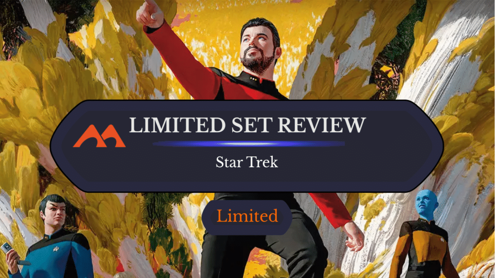
Will Riker, First in the Field | Illustration by Zezhou Chen
“Space. The Final Frontier.
These are the voyages of the Starship Enterprise.
Its five-year mission: To explore strange new worlds;
To seek out new life and new civilizations;
To boldly go where no man has gone before!”
These immortal words were first broadcast in 1966, when the original series of Star Trek appeared on TV screens. The adventures of Captain James T. Kirk and the crew of the U.S.S. Enterprise, Spock, Bones, Uhura, Scotty, Sulu, and Chekov, inspired millions around the world.
I remember watching Star Trek: The Next Generation as a kid, as the BBC aired old episodes of it on Friday nights. I watched the whole series as an adult, as well as Voyager and bits and pieces of the other shows and movies. I also really enjoyed the more recent “Kelvin Timeline” movies by J.J. Abrams. I love this show and everything it stands for, which is why it’s my absolute pleasure to bring you my Limited set review for this set. I’ll break down every card and review them for use in Booster Draft and Sealed Deck. This set will be the draft format for the World Championship in November as well as the newly announced Spotlight Series events in January, so this is going to be a very important Limited environment to look at.
As always, this review is based on my initial impressions of the cards. Many cards will under- or over-perform based on initial impressions as the format takes shape. My reviews are largely based on the card’s quality in a vacuum or the assumption that its archetype is playable.
Grading Scale
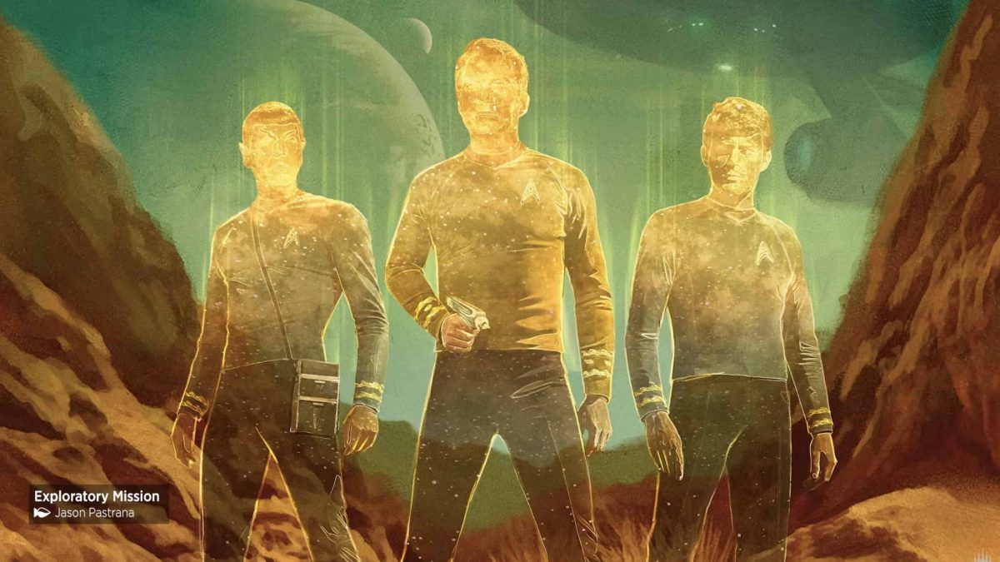
Exploratory Mission | Illustration by Jason Pastrana
I use a comparative rating system on a scale of 0-10. Here’s a rough guide to what each rating means:
10: The absolute best of the best. 10s make a meaningful impact on any game, especially when playing from behind, and they’re extremely tough to beat.
Examples: Ajani Unrelenting or Uldaros Theorix
8-9: Extremely good cards, usually game-winning bombs and the most efficient removal spells, though not quite good enough to be a 10/10. Could also be the mythic uncommon of the set (though these are harder to predict).
Examples: Lich's Relic or Hungering Puppetbeast
5-7: Important role-players. These are typically great uncommons that really drive you towards playing a particular color, such as build-arounds and good removal, as well as very powerful commons.
Examples: Mindseeker Oculus or Break Under Pressure
2-4: The average Limited card. Most commons end up in this range, and your Limited decks will be made up mostly of these.
Examples: Undulating Witness or Arcane Amphisbaena
1: These cards are weak, and you hope never to play them in your main deck, though they’re still just about playable if you need them in a pinch.
Examples: Eardrum Rattler or Whiplash Wordsmith
0: Virtually unplayable in every scenario, and youm should never put these cards in your main deck. Typically cards that were designed with constructed or Commander play in mind but are awful in Limited.
Examples: Loyal Tutor or Gardenize
Wrap Up
Captain James T. Kirk | Illustration by Jason Pastrana
As I was writing this article, we learned of the passing of two Star Trek legends. Walter Koenig, who played Pavel Chekov, and Sir Patrick Stewart, who played Captain Jean-Luc Picard. They’re both integral parts of this franchise, and while this may be a somewhat meaningless gesture, I’m dedicating this to them. I’ll also be making a donation to Patrick Stewart’s charity of choice, and I’d like to invite you to do the same.
Until next time, take care of yourselves!
Follow Draftsim for awesome articles and set updates:Set Mechanics
This set features a few new and returning mechanics that resonate with the world of Star Trek, so let’s have a look at each of them individually.
Beam Me Up
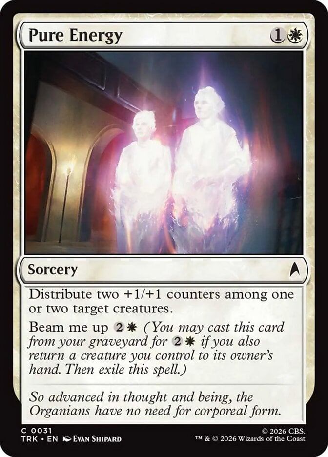
“Beam Me Up, Scotty” is one of the most famous lines from the original series, even though those exact words were never actually spoken.
The mechanic itself is a play on flashback, allowing you to cast spells from your graveyard. However, you must return a creature you control to your hand as an additional cost. While this may sound like a downside, if you return creatures with good enters or leaves abilities, you can easily turn it into an upside. We know how powerful flashback can be–it’s one of the best mechanics ever printed–and I can definitely see this being a great addition to this set.
Face a Dilemma
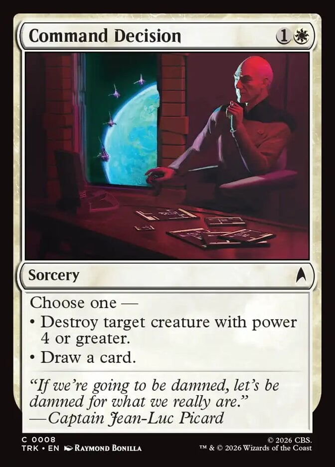
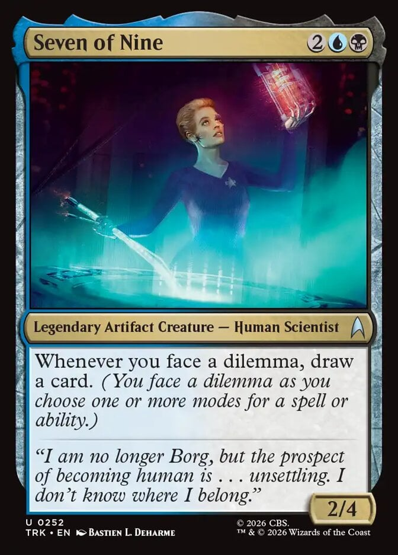
While Star Trek included plenty of action scenes, over the years its most enduring episodes have actually been about facing moral dilemmas. These powerful episodes are often considered some of the best in the show’s history, so these dilemmas are woven into the fabric of this set and are represented by a vast number of modal spells and abilities.
You’ll also see cards that trigger their abilities if you have “faced a dilemma”, which basically means to have chosen a mode for a spell or ability. We know that modal spells and abilities are awesome. They give you more gameplay decisions to make, which in turn make the gameplay more fun and interesting. This mechanic alone gives me high hopes for Star Trek.
Federation
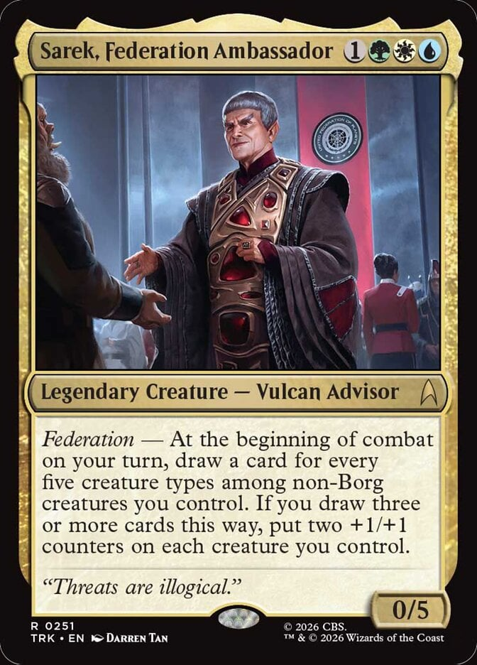
The United Federation of Planets is the main governing body that the Enterprise and her crew represent in the galaxy. The Federation’s main guiding philosophy is that all races throughout the galaxy can be brought together and work collectively, so of course the federation mechanic embodies this.
Federation is simply an ability word that cares about the number of different creature types among the non-Borg creatures you control. The many “alien” races featured in Star Trek appear in this set as their own individual creature types, including Vulcans, Klingons, Romulans, and so on, so you should have a wide variety of different creature types in most decks that you build.
These abilities are interesting and well-supported, so we’ll have to see how they play out.
Strange New Worlds
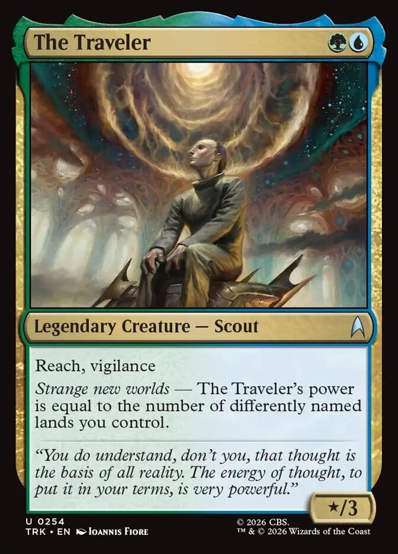
In most iterations of Star Trek, the exploration of new planets is a driving force behind many of the storylines. This is represented in the strange new worlds mechanic, which counts the number of differently named lands you control. We already saw this on a few cards in Edge of Eternities, but they didn’t make any sense in a set with so few nonbasic lands in it.
In Star Trek, we have multiple cycles of dual lands and utility lands, and even more ways of getting differently named lands into play. Building around the best cards with this mechanic sounds like a fun challenge, because it’s not enough to simply put them into a deck that only has, for example, Islands and Forests. Instead, you may find yourself picking up random dual lands that aren’t even in your colors just to increase your counts for this.
Like drafting snow lands in sets that support that, this mechanic sounds like a lot of fun and I’m excited to see it in action.
Spacecraft
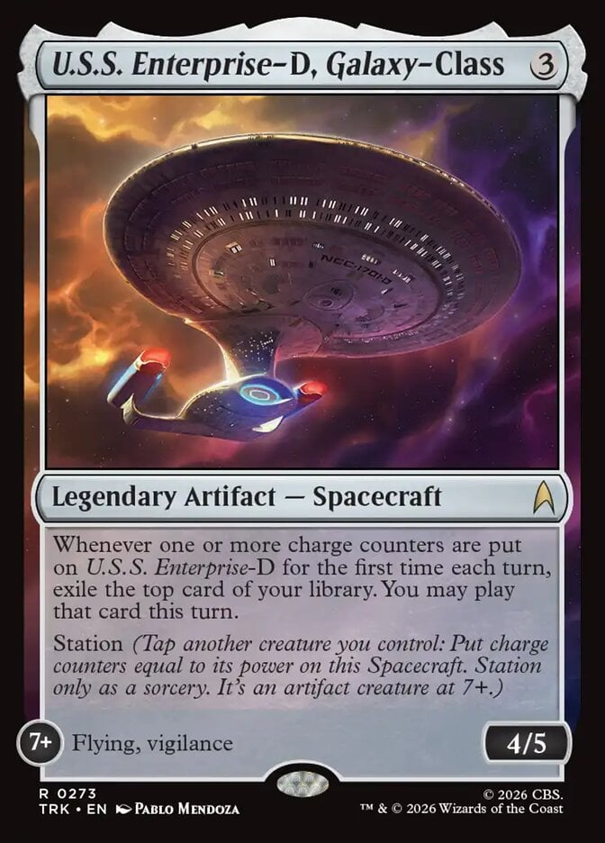
Making the most obvious return in Magic history, spacecraft are back from Edge of Eternities. A spacecraft starts out as a simple artifact with the keyword ability “station”, which says you can tap an untapped creature you control and put charge counters on the spacecraft equal to its power. Once the spacecraft has enough charge counters on it, it becomes a creature and usually gains some additional abilities.
When we saw them in EOE, spacecraft were simply not good. WotC over-costed a lot of them, and they were too hard to make work. Nothing has changed since then, but some of the new designs are a lot more interesting than anything we saw in EOE, so I think it’s fairly likely we’ll conduct space battles with these new cards.
Assimilate
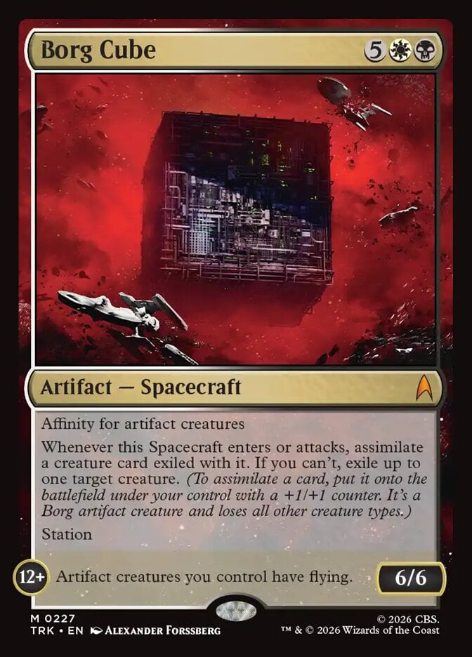
The easiest way to explain the Borg is that they are basically the Phyrexians, but in Star Trek. They’re a singular hive mind who “assimilate” other cultures by conquering them and turning their peoples into new Borg drones.
The Borg are the white/black Draft archetype, a sliver-esque aggro deck that represents their hive mind, but they also have their own mechanic. When you “assimilate” a card, you put it onto the battlefield under your control as a Borg artifact creature with a +1/+1 counter on it. This is clearly extremely powerful, so it only appears on a handful of cards at the higher rarities.
Draft Archetypes
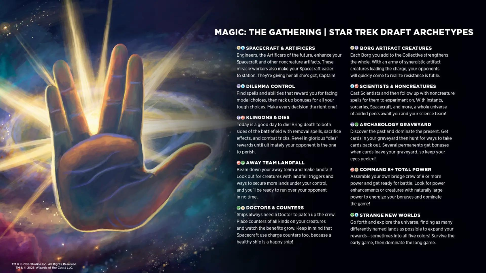
Source: Wizards of the Coast
Star Trek is a full Draft set with the typical 10 2-color draft archetype structure.
- Azorius (White/Blue WU): Engineers and Spacecraft
- Dimir (Blue/Black UB): Facing Dilemmas
- Rakdos (Black/Red BR): Klingon Aggro
- Gruul (Red/Green RG): Landfall
- Selesnya (Green/White GW): Doctors (counters matter)
- Orzhov (White/Black WB): The Borg (artifact creatures)
- Izzet (Blue/Red UR): Scientists (noncreature spells)
- Golgari (Black/Green BG): Gravebreak
- Boros (Red/White RW): Command Crew (Creatures with a total power 8 or greater)
- Simic (Green/Blue GU): Strange New Worlds
White
70,000 Light-Years from Home
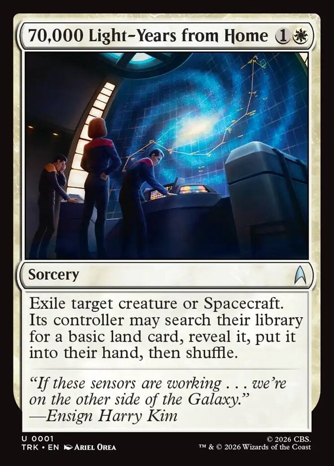
Rating: 6/10
The plot of Star Trek: Voyager involves the fledgling crew of the U.S.S. Voyager as they end up on the other side of the galaxy, 70,000 Light-Years from Home. So yeah, exiling a creature or spacecraft is a pretty resonant ability for this card to have.
It’s basically a much weaker Path to Exile, but Path is so powerful already that that’s hardly a bad thing. You probably won’t want to play this early, but exiling a big creature in the late game so efficiently should be great.
Andromedan Automatons
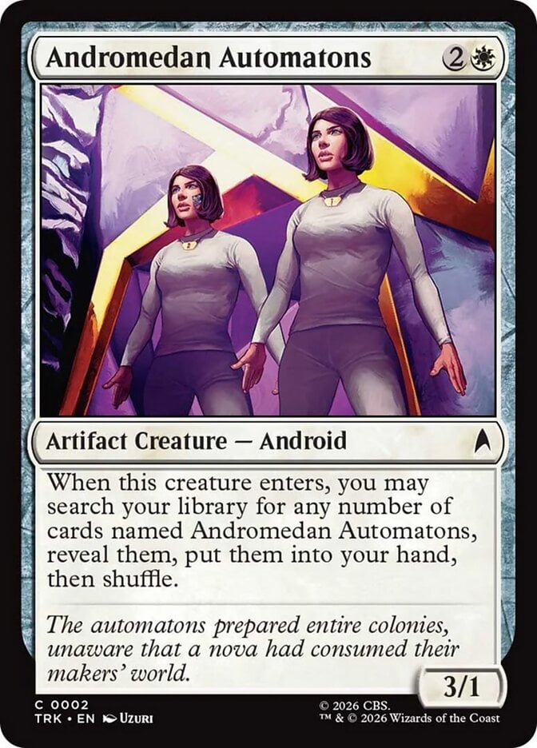
Rating: 4/10
This is going to be a really fun challenge during a booster draft. The first copy of Andromedan Automatons is basically unplayable, but once you find a second one, the first one you play draws you a spell when it enters. That’s pretty good, and if you find a third or even a fourth copy, they get even better.
Antagonist Incorporator
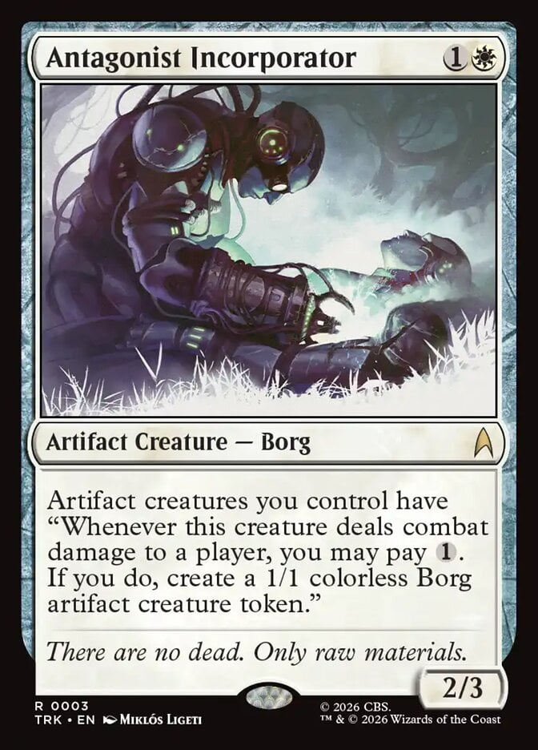
Rating: 8/10
Antagonist Incorporator looks like a great way to swarm the board with additional Borg tokens. Your Borg decks already want to go wide, and not only does this help you to do that, but it also rewards you for it. Plus, the tokens you make also have this ability and can create even more tokens. The only thing that could hold this back is that you need to connect with your creatures to get them to trigger, and that might not always be possible, but this feels like an incredibly powerful card if you can enable it.
Assembly Specialist
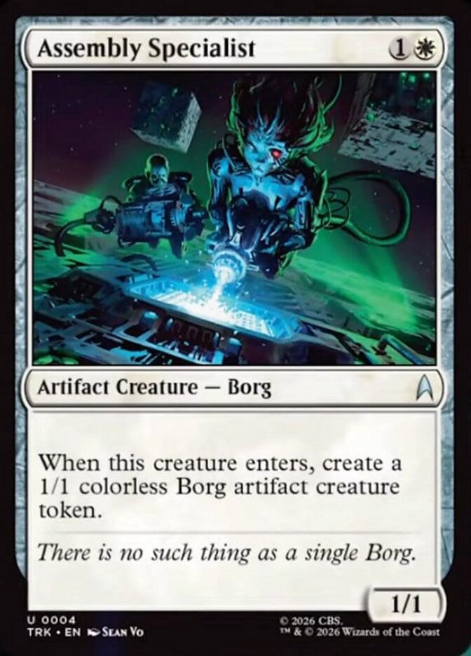
Rating: 6/10
Two mana for a pair of 1/1s is always a good deal when we get it. When you add in the fact that the Borg want to be a go-wide aggro deck centered around artifact creatures, Assembly Specialist looks like one of the best ways to start your curve in that deck. I’d prioritize this very early when drafting a Borg deck. It’s less good but still solid in other white decks.
Brad Boimler, Eager Ensign
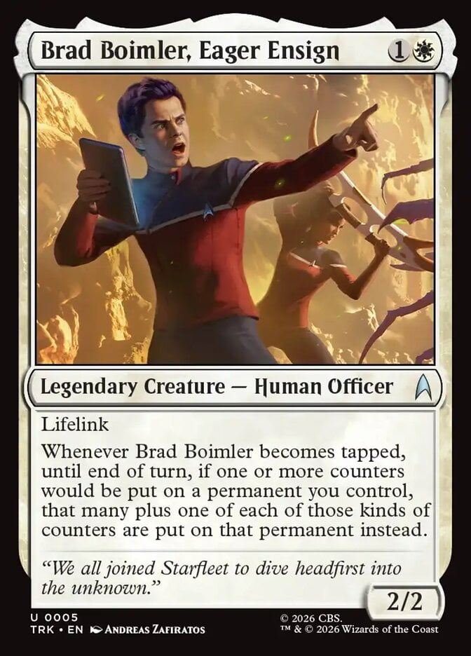
Rating: 5/10
Brad Boimler, Eager Ensign is one of the main characters from one of the animated series, Lower Decks. While I’m not very familiar with the show, this card is extremely good. A 2/2 lifelinker for 2 mana is a great start, but Boimler pulls a bit of double duty by being a great build-around for both white/blue spacecraft and white/green counters. You can use it to quickly station a spacecraft or just get extra utility from your various doctor creatures, and both sound pretty good.
Captain Benjamin Sisko
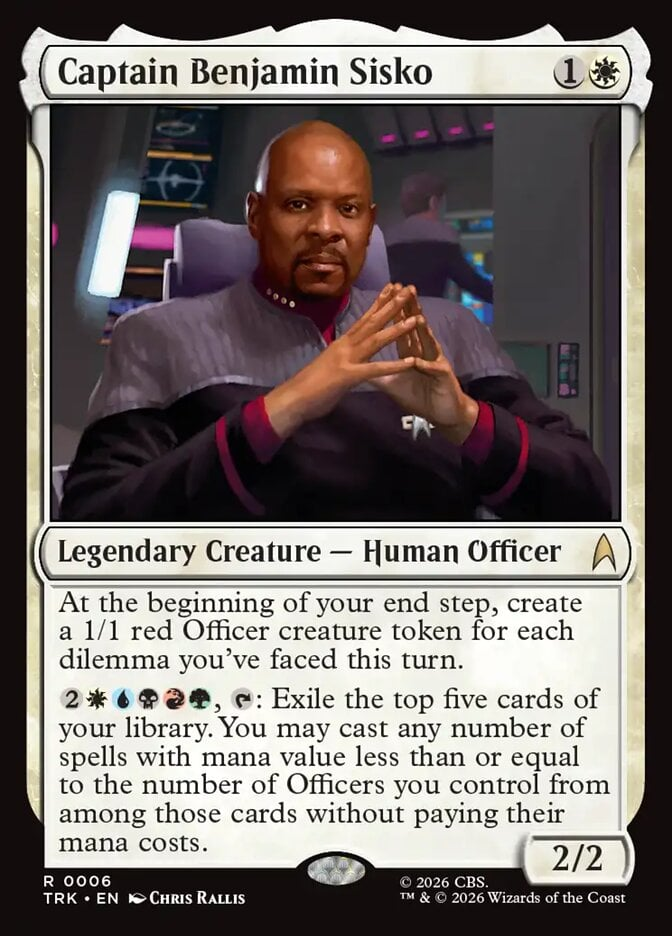
Rating: 8/10
The badass captain of Deep Space Nine, Captain Benjamin Sisko functions kind of like a Hero of Precinct One but for dilemmas. I’ll happily take that. There are so many modal spells and abilities in Star Trek that this seems like a great card to take early and build around. I don’t think we’re likely to use Sisko’s 5-color activated ability, but it’s still very good without it.
Captain Jean-Luc Picard
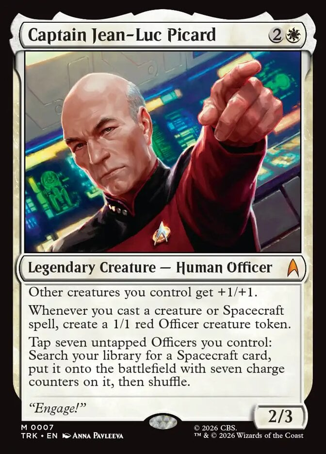
Rating: 9/10
Here, we have the best Captain in the whole show (fight me), Captain Jean-Luc Picard. Legendary actor Patrick Stewart brought this incredible character to life through 10 TV seasons (across TNG and Picard) and four movies, and he is one of my reasons for loving this show in the first place. Picard’s greatest strength as a captain was in the way he inspired and mentored his crew, so of course the card gives +1/+1 to your whole team and creates more officers whenever you cast creatures or spacecraft. I don’t think you’re very likely to search for any spacecraft with its final ability, but I love this card regardless.
Command Decision
Rating: 3/10
This looks eerily similar to Surgical Precision, which we just saw in Reality Fracture. Command Decision is a decent removal spell, but one that’s quite situational and might not find a target. Granted, you can cast it to draw a card when that happens, but I’m not in the habit of casting 2-mana cantrips if I can help it.
Command Subadjunct
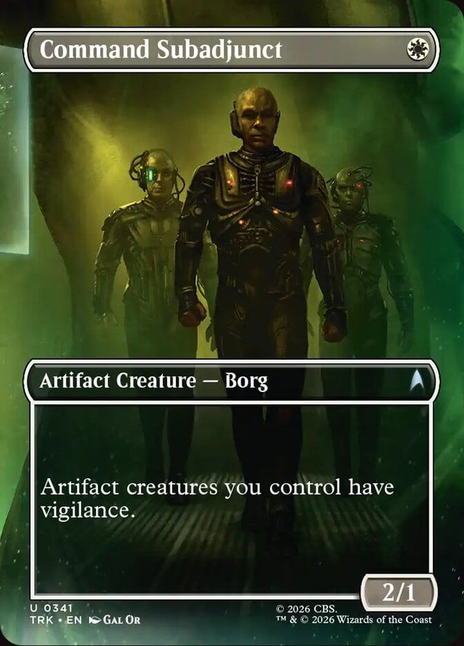
Rating: 3/10
Vigilance carries a lot of extra weight in this set as it can allow you to attack with your creatures and then station a spacecraft with them afterwards. Even so, Command Subadjunct feels like it’s only slightly better than a vanilla 2/1 for 1, which is very playable, but nothing exciting.
Conquest Mission
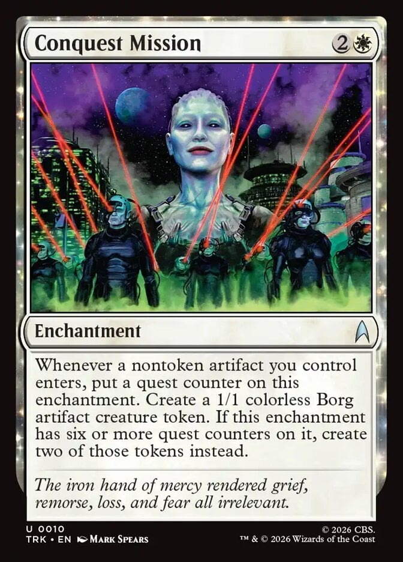
Rating: 7/10
While taking a turn off to play Conquest Mission doesn’t sound too appealing, giving you a free 1/1 every single time you play an artifact sounds absolutely incredible. This clearly rewards you for building your deck to maximize it by filling it with as many artifacts as you can find. Knowing that the Borg power each other up just means that a black/white deck with this card will be able to get even more value out of it. This is a build-around that I’m very excited to play with, and I hope it works.
Deanna Troi, Psychic Counsel
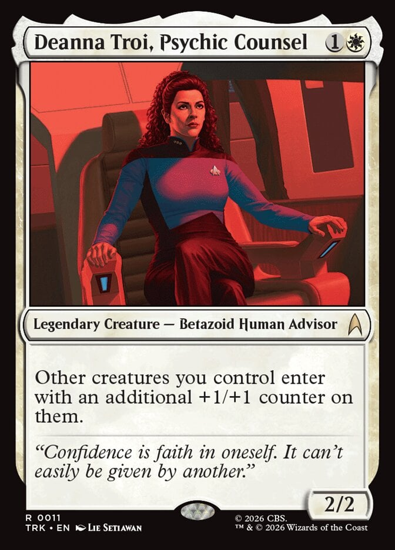
Rating: 7/10
Deanna Troi, Psychic Counsel in TNG is one of the things that made the show look so ahead of its time, and the card is quite good. Troi’s very good when you cast it early and a lot of your creatures enter with counters, and less good the later you play it. On balance, that makes this card pretty good in most creature-heavy white decks.
DOT-7 Repair Squad
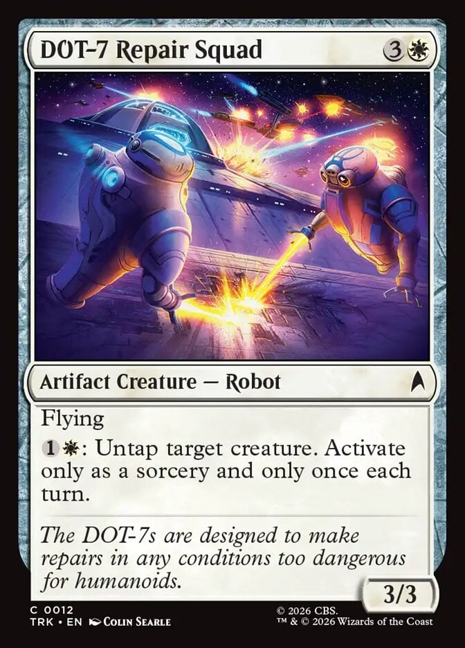
Rating: 2/10
Untapping a creature for 2 mana and only at sorcery speed sounds kind of useless to me, but it can be helpful if you want to station a spacecraft. Aside from that, DOT-7 Repair Squad doesn’t look very good at all and will probably be quite bad. That said, I thought the same about Wakandan Drone Flock, and that ended up being very good within the context of Marvel Super Heroes, so you never know.
Dr. Beverly Crusher
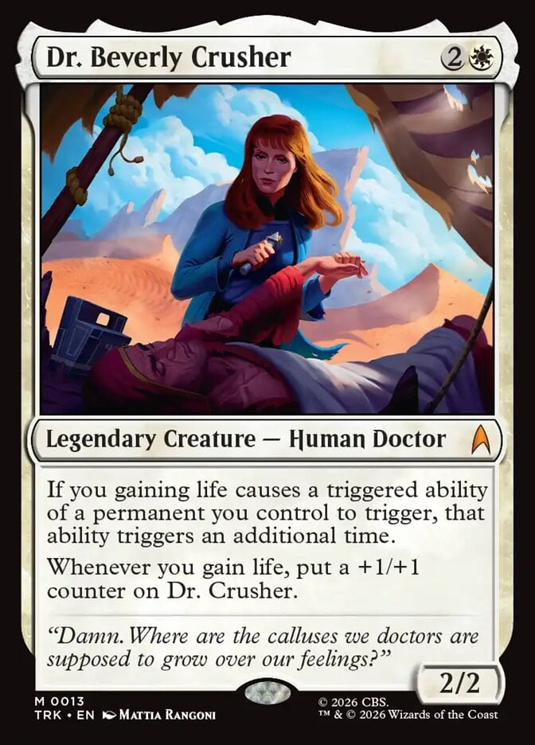
Rating: 4/10
An old friend of Captain Picard’s, Dr. Beverly Crusher was the heart of the Enterprise crew for six of the seven seasons of TNG. She was more than just the ship’s doctor; she was often the moral compass that Picard would turn to in his darkest moments.
Here, this doctor is an Ajani's Pridemate that also doubles lifegain triggers, so it picks up two +1/+1 counters every time you gain life. That sounds good, but with no lifegain theme to back it up, Dr. Beverly Crusher doesn’t look that good. There are a lot of random lifegain sources, so it should do some work in the right deck, but Star Trek isn’t set up for this card at all.
Dr. McCoy, Surly Surgeon
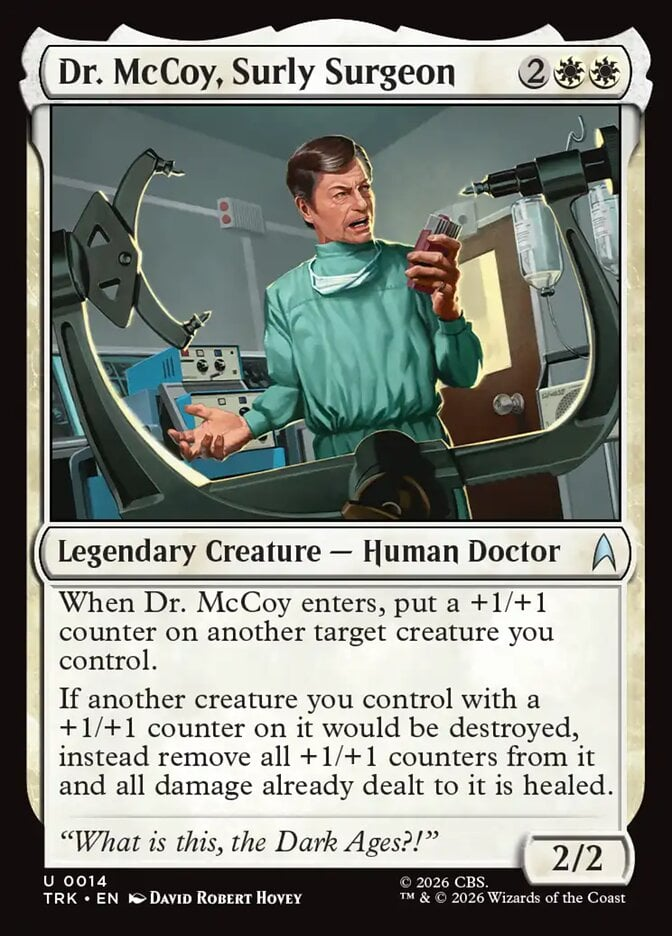
Rating: 3/10
I could easily be wrong here, but this kind of effect doesn’t seem very good in the first place and even less good on a creature with such weak stats. It does make it very difficult for your opponent to get into combat with some of your creatures, but unless yours are already big enough, that doesn’t even amount to much. At 3 mana, Dr. McCoy, Surly Surgeon would be efficient enough to take notice of, but at 4 it just seems over-costed and too weak.
Emergency Medical Hologram
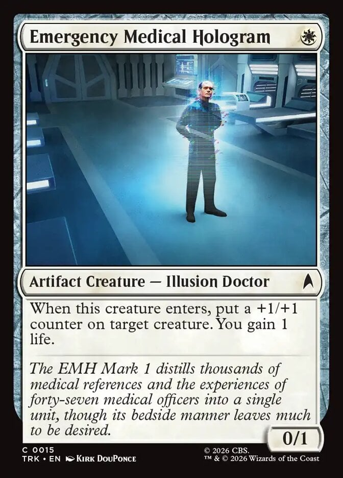
Rating: 2/10
Emergency Medical Hologram is such an unassuming 1-drop that I think it might actually be good enough. Putting its +1/+1 counter on itself isn’t the best play you could make, as a 1/2 on the board is very weak. However, putting it on just about any other creature later in the game is bound to be annoying, especially if it helps a creature attack into opposing blockers. It’s also an artifact creature for the Borg decks, which is bound to be relevant.
Excalbian Gamemaster
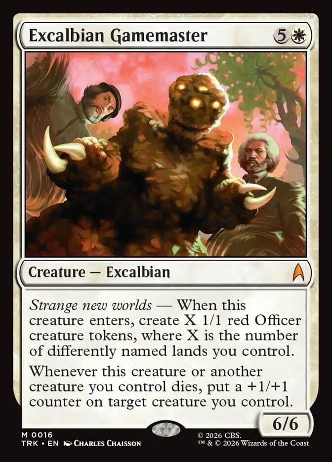
Rating: 10/10
Okay, this is just absurd. Excalbian Gamemaster is the quintessential “army-in-a-can” creature, giving you a minimum of two 1/1s when it enters and probably a lot more than that if you’ve built around it. It’s even very splashable so that no matter what, if you’re a deck built around strange new worlds, you’ll be able to play this. I wouldn’t be surprised if this was the best card in Star Trek Limited.
Federation Field Medic
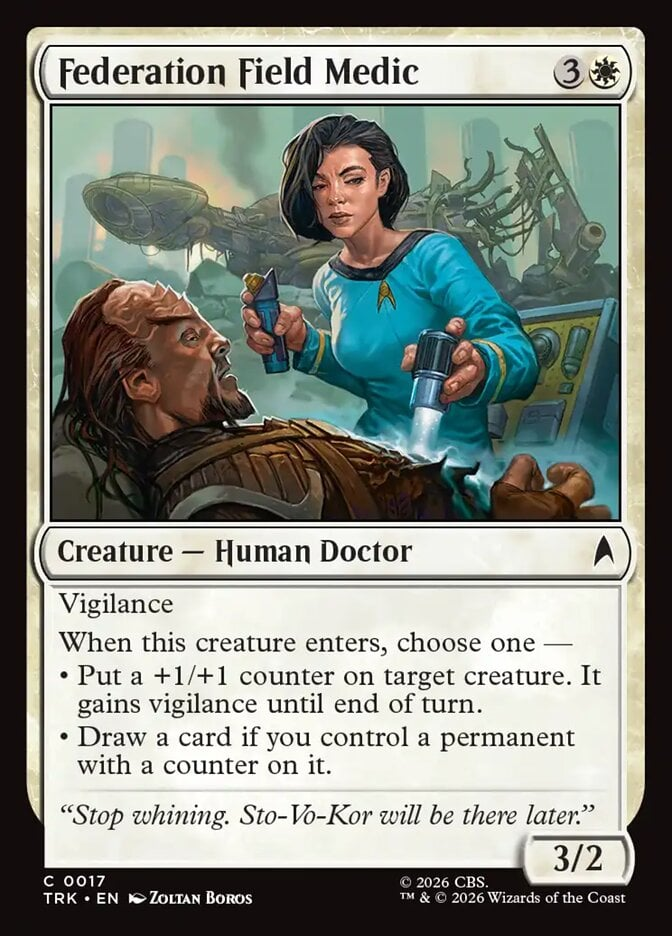
Rating: 5/10
You had me at “draw a card”. I sincerely hope to always be able to draw a card off of Federation Field Medic. But if we can’t, it’s still pretty good to play it as a 3/2 plus a +1/+1 counter, so this is just a great card for the +1/+1 counters deck.
Federation Resupply
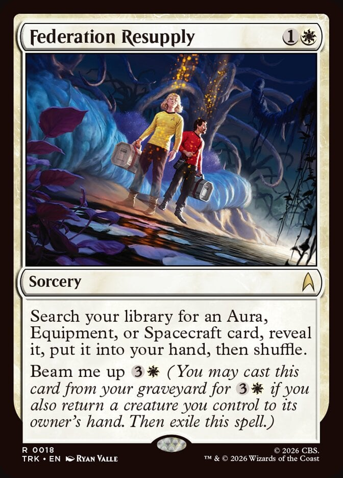
Rating: 2/10
A one-off conditional tutor spell isn’t worth spending your mana on, even if what you search for is really powerful. However, Federation Resupply lets you search for two things overall, kind of like a white Mystical Teachings. Is that good enough? I could definitely see running it in a deck that had several things to search for, but most of time this is going to be far too weak.
Free Borg Revolutionaries
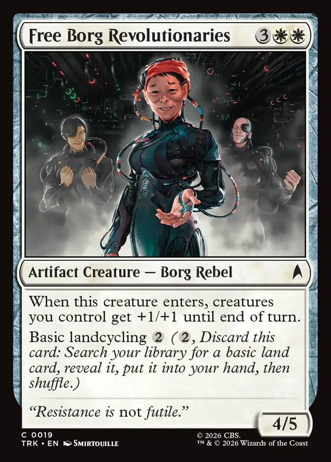
Rating: 4/10
As we’ve seen the last few sets, basic landcycling is a very powerful ability, no matter how bad the creature you put it on happens to be. Free Borg Revolutionaries also happens to be quite a powerful creature when you play it. +1/+1 to your whole team is very good in the right spot, and a 4/5 for 5 mana isn’t the worst when you consider that the landcycling is the main reason to play it.
Ghost of Illyria
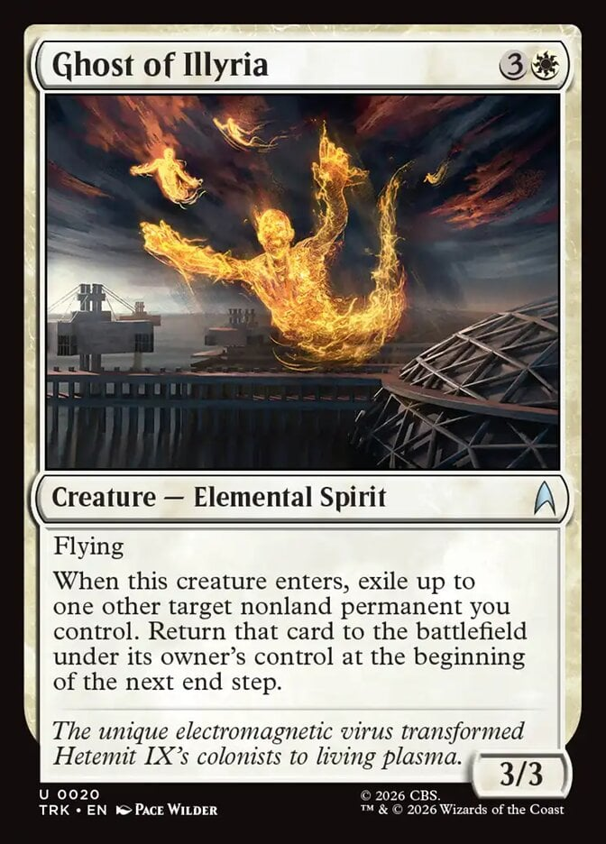
Rating: 6/10
There are a lot of good enters triggers in Star Trek, so it shouldn’t be too hard for Ghost of Illyria to shine in. Most of the spacecraft also have triggers you can utilize, since this works with any nonland permanent. Sorcery-speed flicker effects aren’t usually that strong, but like any spell, attaching it to a creature with good stats changes that equation enormously.
Hologram Janeway
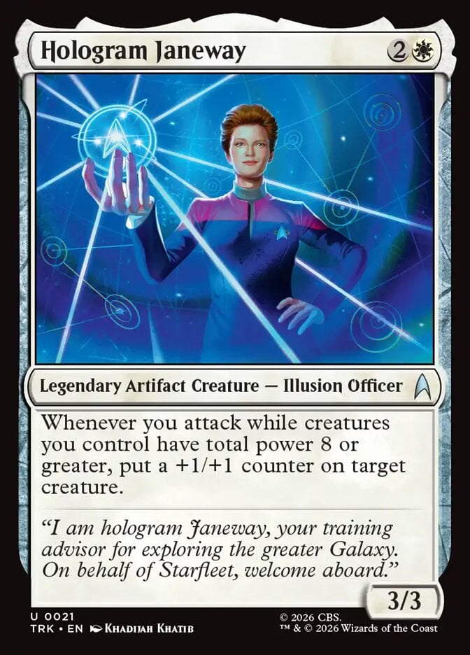
Rating: 5/10
I often talk about the effect of Luminarch Aspirant and how broken it is in Limited. Hologram Janeway has a remarkably similar effect, but with a lot of extra hoops to jump through. Those hoops don’t seem too prohibitive, so I could see this being a very good card in the red/white deck where it belongs, but also with black/white Borg and artifact creatures.
Malfunctioning Holodeck
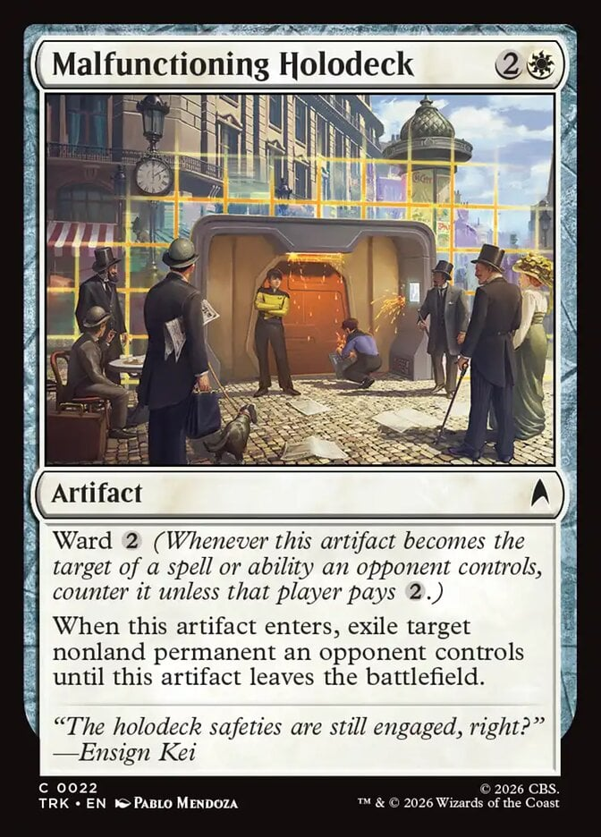
Rating: 6/10
I love the flavor behind this card. In TNG, the Holodeck would frequently malfunction, trapping its users inside it until the problem could be resolved, so of course this is a Banishing Light variant. Malfunctioning Holodeck is your standard white removal for the set, but being an artifact should also help it to play well with TRK’s themes.
The Measure of a Man
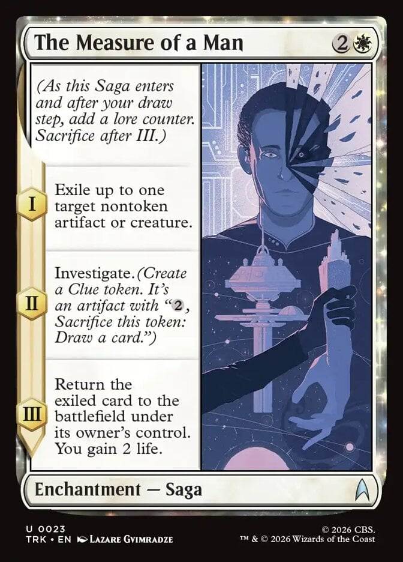
Rating: 3/10
This iconic TNG episode is one of my favorites by far, but sadly the card version leaves much to be desired. The Measure of a Man would be great if you had a way to bounce or sacrifice it before the final ability goes off, but I don’t think TRK has much of that. Instead, this is mostly just a very slow flicker that comes with a free Clue token, which is far too situational for most decks.
Miles O’Brien, Transporter Ops
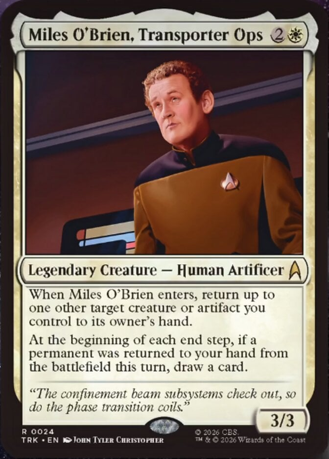
Rating: 7/10
Before Colm Meaney’s Miles O’Brien became the chief of operations on Deep Space Nine, he was the Transporter Chief aboard the Enterprise-D in The Next Generation. Whenever a story involved some sort of transporter malfunction, Chief O’Brien was there to pick up the pieces.
As such, it’s very fitting that Miles O'Brien, Transporter Ops beams up a creature when it enters and then rewards you at the end of any turn in which you returned anything else to your hand). None of the archetypes in Star Trek are specifically centered around this mechanic, but Chief O’Brien is still a very good payoff for it and I’m sure the card will find a home somewhere.
The Needs of the Many
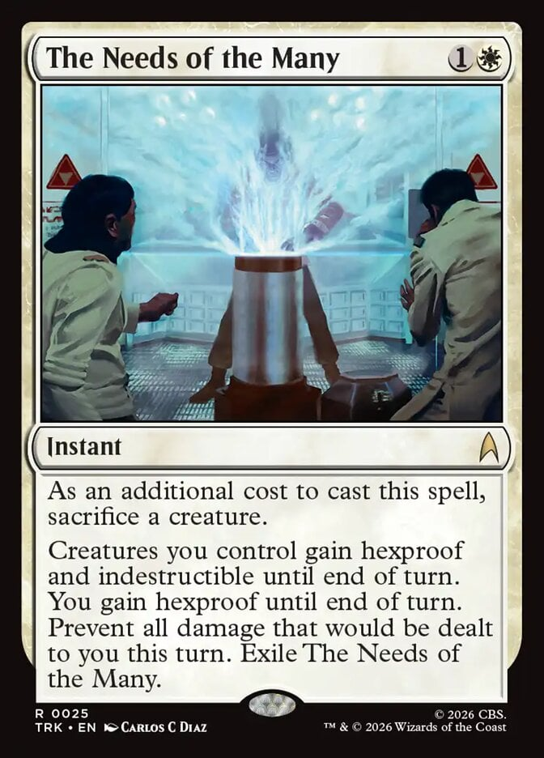
Rating: 0/10
In the climax of The Wrath of Khan, Spock sacrifices his own life to save the Enterprise crew from Khan’s final gambit. With his final, dying breath, he simply reminds Kirk that “The Needs of the Many outweigh the needs of the few, or the one.”
This card isn’t particularly good. Protecting your whole team isn’t a particularly desirable effect in Limited. Board wipes are pretty rare, and sacrificing a creature to use this effect isn’t good enough either. The card is incredibly thematic, but simply not good.
Oberth-Class Starship
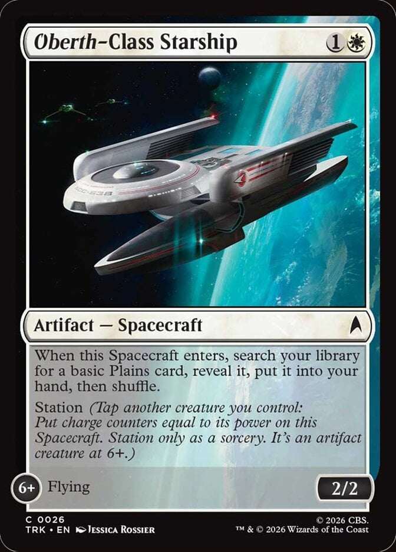
Rating: 4/10
It may take a lot to station this little ship, but the fact that it immediately draws you a card (albeit, a basic Plains) is the key takeaway here. Oberth-Class Starship is a very playable card in any white deck, and there are also some nice synergies to find with it.
Peace in Our Time
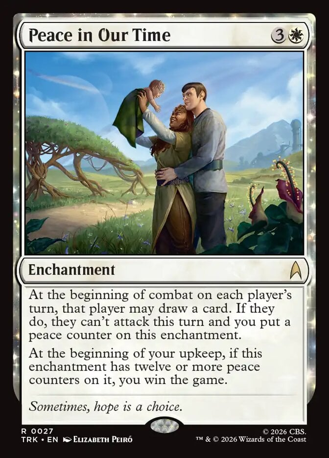
Rating: 0/10
This is a cool build-around that might be worth building around, but the idea of letting my opponent draw cards for free doesn’t really inspire me with confidence. Peace in Our Time just seems far too cute, especially against an opponent that could potentially find a removal spell for it before it gets up to 12 counters. I’ll be trying this alternate wincon for myself, but I recommend others stay away from it.
Pet Sehlat
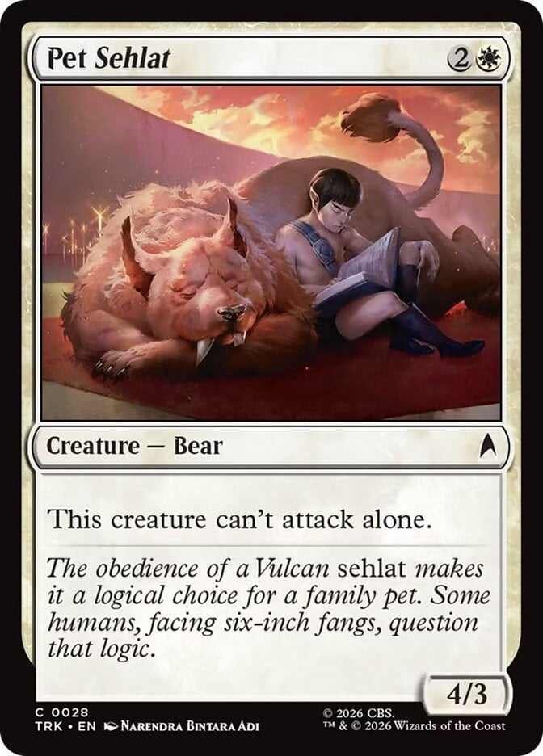
Rating: 3/10
There is really not much difference between Pet Sehlat and a vanilla 3/3 with no downside, the latter of which wouldn’t be playable. Raging Kronch was still pretty good almost a decade ago, and this can turbo-station or hit you 8-power payoffs quickly, so it has merit even when it can’t attack. Plus, it can always block without restriction.
Picard, Leading by Example
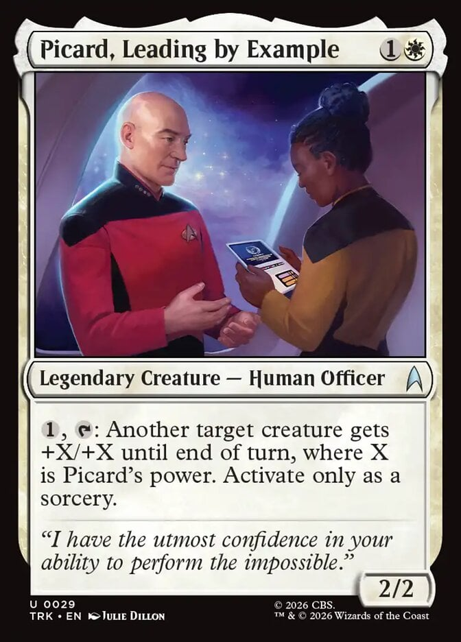
Rating: 6/10
While effects like this one are best when you can use them at instant speed, the fact that Picard, Leading by Example starts out by giving +2/+2 means that it can turn just about any creature into a legitimate threat. Make this creature any bigger and now your 1/1s can attack as 4/4s or even 5/5s, pushing through enemy blockers. This ability also puts more power on the board for the red/white archetype, which might be a big help. Picard is a very aggressively-slanted creature, but white’s decks mostly look like they want to attack a lot, so it should be able to find a home in any of them.
Primary Unimatrix Adjunct
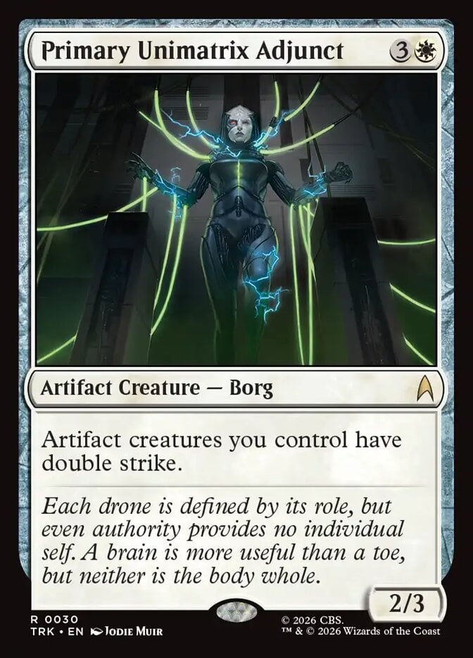
Rating: 5/10
Double strike is an extremely powerful ability, so giving it to your whole team should be pretty good. My main problem with Primary Unimatrix Adjunct is just how vulnerable it looks. It does seem like you’d need to protect it if you want any chance of it surviving, and having it die in the middle of combat puts your other creatures at risk.
Pure Energy
Rating: 1/10
I was a fan of Predictive Preparations in Reality Fracture, though it didn’t really perform well, but I’m not a fan of Pure Energy. The fact that you need three creatures in play to beam it up (one to beam up and the other two to target) really doesn’t inspire me with any hope. I’d leave this one in the sideboard for now.
Rutherford, Upgraded Ensign
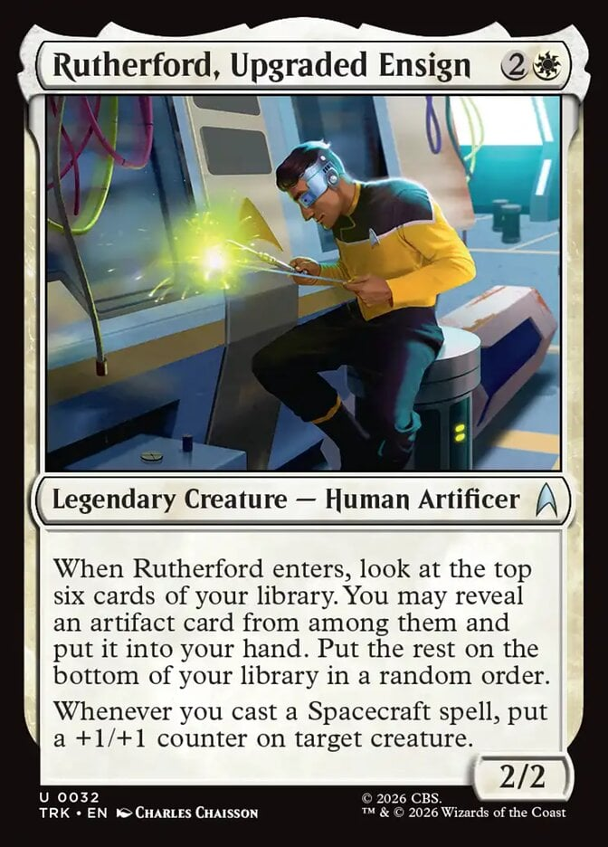
Rating: 6/10
Getting to look at your top six cards means that if you’ve built your deck correctly, Rutherford, Upgraded Ensign will hit an artifact very often. Let’s say there are 10 artifacts left in your deck when you play Rutherford on turn 3. That gives you a 92.63% chance to find at least one artifact. I’ll take that deal any day.
Saavik, Stoic Student
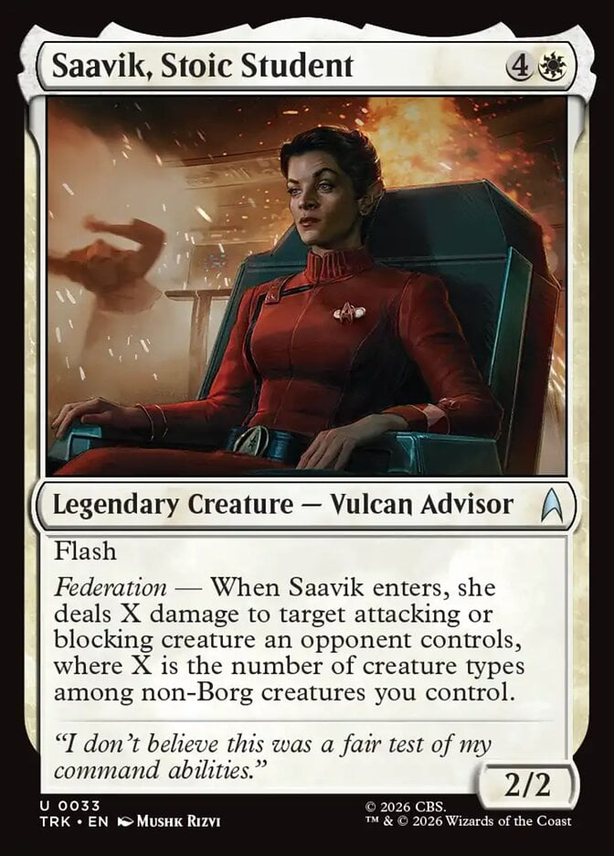
Rating: 4/10
One could look at Saavik, Stoic Student and see a white Flametongue Kavu. While that may be the case, Saavik is far more situational and quite inefficient. It’s at least two creature types to put towards its federation ability, but if that’s all you have, 2 damage won’t do very much when you’re late enough in the game to cast a 5-drop. There will be plenty of times when Saavik is a great two-for-one play, but also many more when it’ll be stuck in your hand doing not much of anything.
Set Phasers to…
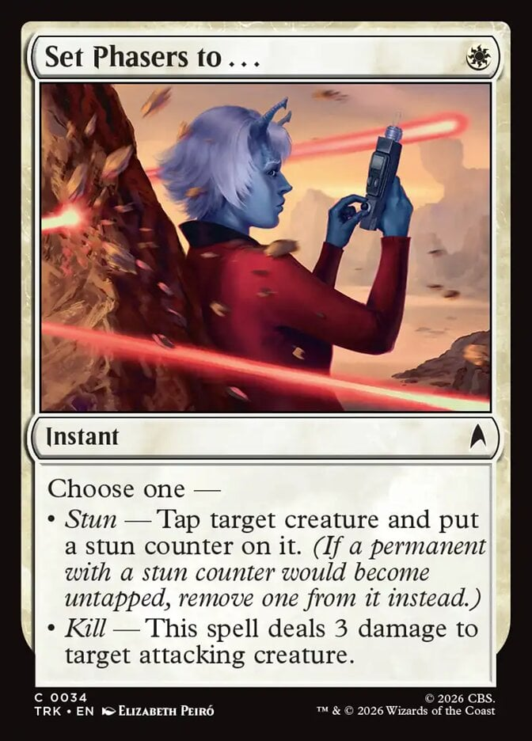
Rating: 4/10
Looks like we’ll have to Set Phasers to . . . kill most of the time. One mana for 3 damage is a very efficient rate for a removal spell, even if you can only use it in combat. And every now and again, picking stun will let you interact favorably with a bigger creature.
Shields Up!
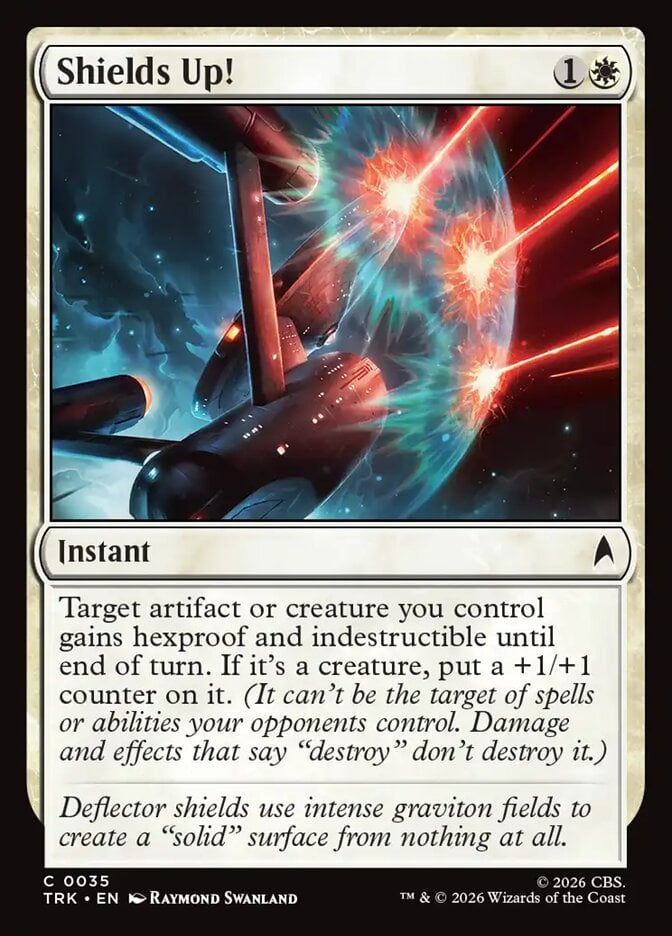
Rating: 5/10
Just like Take Up the Shield before it, Shields Up! should be a highly effective combat trick that protects a creature against just about anything. While costing 2 mana isn’t ideal, hexproof and indestructible covers pretty much all your bases and makes it worth playing.
Shuttle Ace
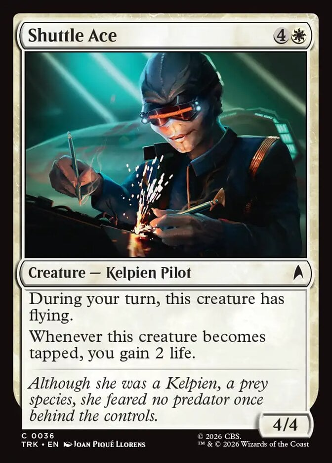
Rating: 1/10
I don’t see Shuttle Ace being very playable. It’s a very replaceable 5-drop, and it gives very little value when you play it. It’s just very unexciting, and I think we can move on.
Sulu, Space Swashbuckler
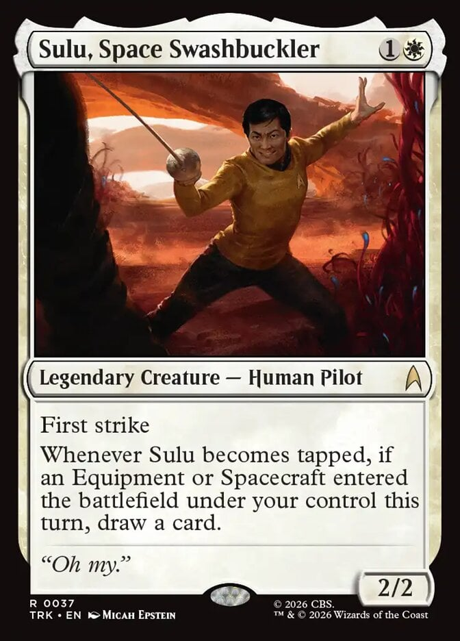
Rating: 7/10
Oh my, indeed! The legendary George Takei brought Mr. Sulu to life, the pilot of the Starship Enterprise. Sulu, Space Swashbuckler recreates one of the character’s most iconic moments from the show with a heck of a lot of style (editor’s note: Yes, we know that “Oh, my!” is a George Takei meme, not something Sulu ever said).
A 2/2 for 2 with first strike is already very annoying to deal with, but then any equipment or spacecraft you play will let Sulu draw you a free card, especially if you have a spacecraft to station. I expect Sulu to be a very solid build-around card, but you don’t even need to enable it very often to get some utility out of this pilot.
Tactical Officer
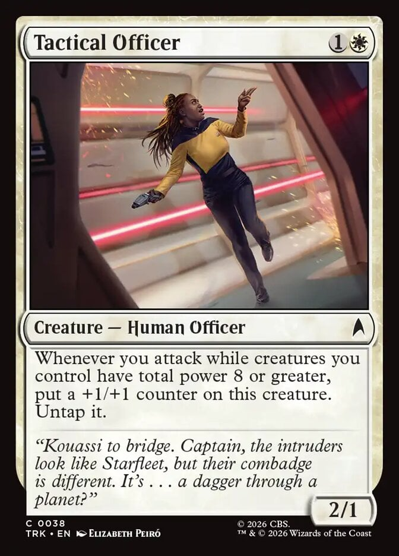
Rating: 1/10
As a 2-mana 2/1, Tactical Officer really needs to make use of its ability. Unfortunately, that ability isn’t even active until you have a board full of creatures, so I don’t think this is something you want to play unless you just really need a 2-drop.
Test of Conviction
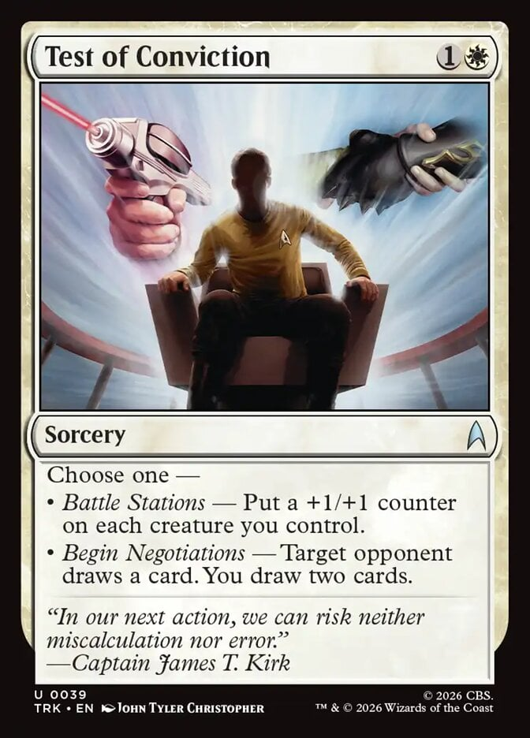
Rating: 1/10
Symmetrical draw spells, even ones that aren’t entirely symmetrical, are never very good. As such, we’re really looking at Test of Conviction as a spell that distributes +1/+1 counters, which frankly isn’t very good either. I think this one is going to fall short of the mark, but if the counters deck really needs an effect like this, at least it’s here.
There’s Coffee in that Nebula
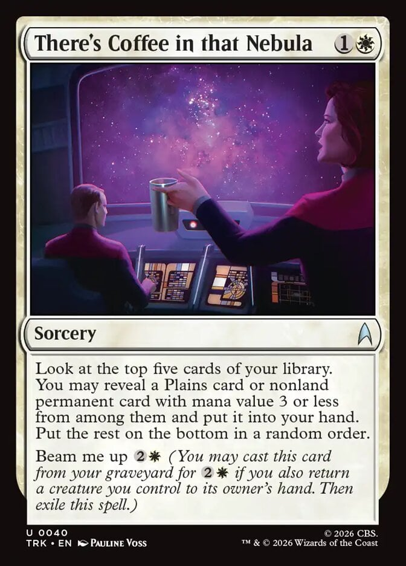
Rating: 4/10
In only the fifth episode of Voyager, the crew find that their energy levels are critically low, meaning Janeway can’t use the replicators to make a good cup of coffee. They find a nearby nebula that they believe can provide them with a new power source, leading to Janeway’s immortal line: There's Coffee in that Nebula. As much as this is a meme (the episode wasn’t particularly good after all), the card itself looks quite strong, essentially like a white Think Twice with a bit of card selection thrown in.
Troubling Tribbles
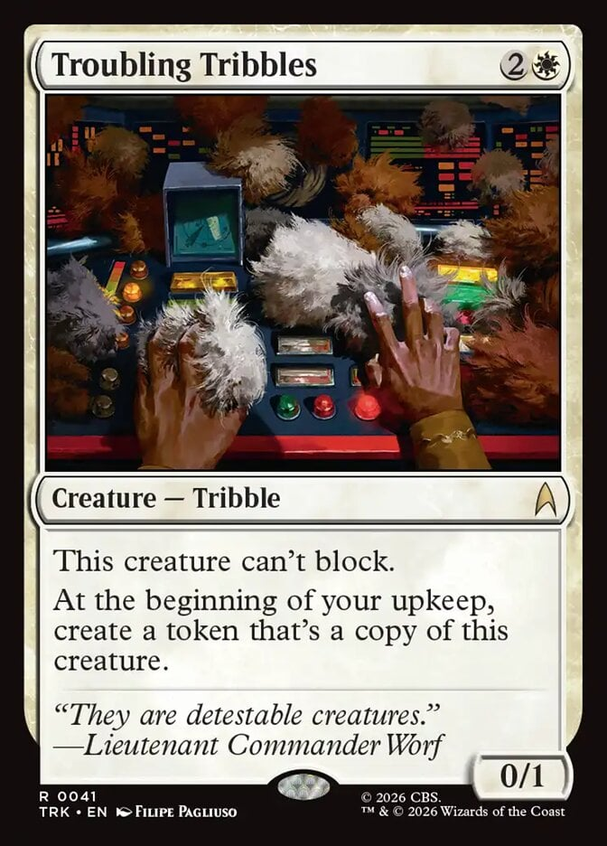
Rating: 0/10
The tribbles are a weird creature in Star Trek lore that multiply exceedingly quickly. Troubling Tribbles does exactly that, but they’re next to useless when they do. After a few turns, if they aren’t dealt with, you might have four, eight, or even 16 of them, but they have 0 power and can’t block, so what good are they? If you can find a way to mass pump them, this card might actually be useful, but that’s not trivial to do. That said, I can’t wait to beat an opponent with an army of tribbles!
Una Chin-Riley, Number One
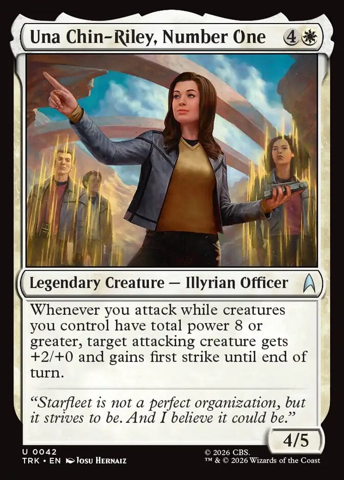
Rating: 3/10
This kind of effect isn’t bad in theory, but costing 5 mana is just far too much for Una Chin-Riley, Number One to be something I’m ever particularly happy to play. I’d assume that you can cast it and get a trigger from it on the same turn, but that’s by no means guaranteed, and a 4/5 isn’t the most interesting of stat lines if it isn’t getting to trigger.
U.S.S. Enterprise-A, Free Spirit
Rating: 10/10
The U.S.S. Enterprise-A, Free Spirit has to be one of the strongest spacecraft we’ve ever seen. It’s essentially a Baneslayer Angel that also creates three 1/1s on entering. It only requires six charge counters to become a creature, which the three 1/1s can provide over the course of two turns. Even if your opponent can deal with this spacecraft, you still got your free tokens, so it’s not even that bad for you.
This is how you design iconic aspects of the show! The Enterprise is one of the most recognizable spacecraft in all of pop culture, and this being one of the strongest cards in TRK is exactly what we want to see.
U.S.S. Excelsior, Cutting Edge
Rating: 6/10
Destroying a tapped creature isn’t always going to be something you can do, but when you can, the U.S.S. Excelsior, Cutting Edge will be a strong two-for-one. While it will be hard to station, as long as you get to remove a creature, you don’t even need to do so right away. There are also a few ways to pick it back up and reuse the triggered ability, which makes it a very useful card if you can utilize it correctly.
Vexing Drone
Rating: 3/10
Tapping an opponent’s creature is a pretty nice ability to have in an aggressive deck, and Vexing Drone has the magic stats of a 2/2 for 2, meaning we’d probably play it regardless. This is a solid creature for the Borg decks that actually gets better later in the game.
Blue
Anthropological Mission
Rating: 5/10
Getting to draw a card whenever you play a noncreature spell could be quite powerful. The first two spells only let you loot, but every spell thereafter nets you a whole new card. Anthropological Mission requires a little bit of time to get going, but if you can give it that time, it should be very effective. Load up on beam me up spells if you’re going to build around it.
The Caretaker
Rating: 9/10
Facing dilemmas seems remarkably easy to do in Star Trek, and The Caretaker has got to be the best payoff for them. You can trigger it in every end step, so instant-speed modal spells might be able to add up to two triggers every turn cycle. The Caretaker may be a 6-drop, but a few free spells plus a 5/6 vigilance creature makes a huge impact in any game you’d play it in.
Cetacean Ops
Rating: 1/10
We’ve seen a few 3-mana 2/2s in recent sets that pick up a +1/+1 counter whenever you cast a noncreature spell, and they’ve all been bad. Cetacean Ops being a 4-mana 3/3 actually makes me less inclined to want to play it. If I had H.M.S. Bounty, Unlikely Timeship available, then I might be a little more interested, but it’s still not a very good card.
Cloak and Phaser
Rating: 7/10
Cloak and Phaser looks like an incredible payoff spell for strange new worlds. At 6 mana it’s very castable, but a little too expensive. At 5 or less it’s incredible. To accomplish this, you only need three or more different lands, which sounds very doable. In a good build of strange new worlds, the thought of getting to cast this for significantly less mana doesn’t seem all that unlikely either. This card is a very real incentive for this deck, and one I’m going to be very excited to build around for myself.
Cloistered Telepath
Rating: 2/10
I’m not quite sure where Cloistered Telepath will fit in this format, but decent triggered ability like this makes it a good option for beam me up spells. It’s quite weak though, so I think I’ll cut this more often than not.
Consider the Prime Directive
Rating: 4/10
Most conditional counterspells get significantly worse in the late game, as the more lands your opponent has, the fewer spells you’ll actually be able to counter. However, Consider the Prime Directive is never dead. Stunning a creature and drawing a card is also a very good mode to have access to. This also causes you to face a dilemma, so it looks like it’ll be really good in the format.
Data, New Life
Rating: 3/10
I’ve been very wrong about cards like this in the past, so I’m being extra careful with how I rate Data, New Life. It naturally grows every turn just from you drawing your card for the turn, but you’ll really want to combine it with other sources of card draw to make Data really shine. I think that’ll be fine to do, but starting out as a 0/1 will surely hold it back.
Deep Space Scan
Rating: 1/10
If this format is as slow as I suspect it will be, Deep Space Scan could actually be very powerful. However, requiring at least four or five different lands and a slow enough format to accommodate it doesn’t sound like a winning combination to me. I’m sure this could be good in the right deck, but as I’ve said, I don’t think that’ll come up all too often.
Dominion Saboteur
Rating: 6/10
Five mana is a little on the expensive side for a Clone, but that really shouldn’t matter. These types of creatures are always fantastic, and Dominion Saboteur is no different. Not only can it copy any creature or artifact on the battlefield, but it also copies the counters on it, so you can also copy a fully stationed spacecraft. No matter what, this will always be the strongest creature on the battlefield once you play it, and it’ll be well worth taking early in a draft.
Emergency Holographic Crew
Rating: 4/10
Spacecraft don’t seem too likely to end up in the graveyard, since you need to station them before they can trade off in combat. That said, getting a sweet two-for-one with Emergency Holographic Crew is hard to pass up. It seems like most of the time you’d have to surveil with it, but hopefully you can wait long enough until you can get back your Suurok-Class Science Vessel or something similar.
Energize
Rating: 5/10
This card reminds me a lot of Silent Departure, a very powerful interactive spell in its own right. Like its predecessor, Energize, gives you two potentially powerful tempo spells. They may be sorceries, but resetting a spacecraft, removing an annoying blocker, or whatever else is well worth playing this card for.
Ensign Pavel Chekov
Rating: 4/10
This Ensign Pavel Chekov card has quite a unique design. It might be possible to mill out your opponent if you can combine it with other similar effects, but the most important part of Chekov’s effect is the ability to steal a land from your opponent. You’re very likely to find one out of the cards you exile, letting Chekov act as a defensive cantrip creature that advances your gameplan in the Strange New Worlds deck.
Enterprise NX-01
Rating: 4/10
The Enterprise NX-01 was the ship piloted by the crew from Star Trek: Enterprise. This card certainly has the potential to be powerful, but without knowing how fast the format will be, it’s difficult to evaluate. I certainly think being a spacecraft instead of just a creature holds it back a lot, but it’ll be best suited for some sort of tempo deck that can use it to get rid of a blocker and continue applying pressure to an opponent.
Federation Probe
Rating: 4/10
Say it with me: “We don’t underestimate 1-drops!” I’m very happy to play Federation Probe on turn 1 and get a surveil along with my flying 1/1, then later in the game it can buff a creature and potentially get a better attack in. But that’s not what makes this card special. It’s a dilemma, a cheap creature to beam up, and a cheap artifact. This looks really good, and my relatively high grade for a common might not even be high enough.
Guidance Failure
Rating: 5/10
So yeah, we’re back to this design again. Four mana for an instant that puts a target creature on the top or bottom of its owner’s deck. We’ve seen so many variations on Guidance Failure that we know it’s going to be good, especially with the cost reduction to help slot it into more places on the curve.
Gwyndala, the Progeny
Rating: 3/10
Gwyndala, the Progeny is a very simple card in Limited. It’s a 2/2 for 2 that leaves behind a very relevant equipment after it’s removed from the field. That’s definitely good, but not too exciting. There isn’t much equipment in Star Trek for its second ability to be of any use in Limited, so it really stops there. Blue decks should play Gwyndala, but they don’t need to go out of their way to pick it up.
Highly Illogical
Rating: 4/10
Four mana Cancels aren’t where we typically want to be, but you can’t cast Cancel on turn 2 to hit a cheap spell. Highly Illogical actually seems like a pretty logical card to play in a blue deck, especially one based around noncreature spells.
H.M.S. Bounty, Unlikely Timeship
Rating: 6/10
In Star Trek IV: The Voyage Home, Kirk and the Enterprise crew travel back in time to rescue a pod of Humpback Whales and bring them to the 23rd century. The H.M.S. Bounty, Unlikely Timeship is the captured Klingon warbird that they use to do this, making this an incredible top-down design.
There are two whale cards in Star Trek, one of which is the blue landcycler, so it should be relatively easy to find one or two to pair with this card. You get the upside right away by getting to tutor for one, and you might even be able to attack with it on the following turn as well as get the extra turn. A few things have to go right for all of this to work, but the payoff is certainly there to allow you to try.
Hoshi Sato, Exolinguist
Rating: 6/10
You don’t need any other creatures on the battlefield for Hoshi Sato, Exolinguist to be worth playing. It counts its own creature types, so you should always be able to look at two cards and pick the best one. If you do have other creatures, you get to look at potentially a lot more cards and cherry pick something very good. At the bare minimum, it’s a cantrip creature, assuming your opponent doesn’t remove this scientist before its trigger resolves, at best it’ll find you the best card in your deck while adding to the board.
Humpback Whales
Rating: 4/10
Humpback Whales is blue’s basic landcycler, which already makes it quite playable. A 5/6 vigilance creature with ward is certainly more than nothing should you end up casting it, but the fact that you can use Humpback Whales to fix your mana at any point you draw it makes this card extremely useful for any deck.
Interstellar Effigy
Rating: 5/10
Usually, we like our Man-o'-Wars to be much cheaper than 5 mana, but Interstellar Effigy can still get the job done. It may come down later in the curve, but bouncing a creature while adding to your board is still very powerful. Also, it’s a common, when most cards like this tend to be uncommon, so we’ll see it far more often.
Jett Reno, Problem Solver
Rating: 6/10
Easily one of the best characters in Star Trek: Discovery, Jett Reno, Problem Solver is quite a nifty little build-around for the dilemmas deck. It’s hard to know how frequently you can trigger it, but I’d imagine that a good version of this deck can do so with relative ease. I doubt you’ll be able to get it to 4 power very often, not for a lack of ways to trigger it, but because it’ll take so long that an opponent will probably remove Reno before it happens. Still, there are other ways to buff its power and get to draw cards; you just need to find some ways to enable it.
Kobayashi Maru Scenario
Rating: 1/10
The Kobayashi Maru Scenario is a test given to Starfleet cadets that have command ambitions. It’s an unwinnable test designed to have the cadet experience fear in the face of certain death. If you hope not to lose to it, you’ll have to find a way to beat it. There are some ways, like Rules of Acquisition and Kirk, Commanding Officer, but without them, playing this card will cause you to lose far too often.
Lieutenant Commander Data
Rating: 7/10
Perhaps the most beloved character in Star Trek: The Next Generation, Lieutenant Commander Data was a highly sophisticated android whose character arc centered around his quest to better understand humanity.
This mythic card does quite a lot if you can enable it. Removing three +1/+1 counters from your creatures to draw cards doesn’t sound all that appealing. However, removing charge counters from fully stationed spacecraft that can easily pick them back up again? That sounds a lot more interesting. Data also grows itself with every noncreature spell cast by either player, which makes it a very relevant threat on most boards.
Lt. Cmdr. Geordi La Forge
Rating: 3/10
Another popular character from TNG, Lt. Cmdr. Geordi La Forge sadly doesn’t have an inspiring card here. Doubling up your station abilities isn’t all that good. I can’t imagine this will be necessary for any blue decks, so even if you do play it, you won’t miss it when you don’t draw it.
Make It So
Rating: 4/10
This is a draw spell I really like. Picard’s catchphrase, Make It So, lets you draw two cards and create a 1/1 token, which sounds pretty good for just 4 mana. It also has you face a dilemma, which makes it very desirable for any decks that care about that. As long as the format is slow enough to allow you to draw cards in this way, this should be a very good card in any blue deck. Bonus points for being part of an infinite combo with Stella Lee, Wild Card.
Marooned
Rating: 3/10
The latest sets have had very good variations on this effect in blue, but Marooned is missing the clause of removing the abilities of the thing it enchants. As it stands, it’s a fine way to remove a creature, but it’s not without significant downsides that will surely hold it back compared to cards like Infinite Coursework.
Melkotian Adjudicator
Rating: 3/10
Since this triggers off not just instants and sorceries, but also some creatures, I quite like it. It’d be easy to compare it to Cetacean Ops, but the fact that it flies makes a big difference. Flying seems especially rare in Star Trek, since many of the fliers require stationing, which makes Melkotian Adjudicator stand out even more.
Mr. Spock, Science Officer
Rating: 8/10
Perhaps the most recognizable character in all of Star Trek, Leonard Nimoy’s Mr. Spock, Science Officer is a unique card that can double every single card you draw. Normally, these effects don’t let you draw an additional card in the draw step, but Spock does. It may not prompt you to draw a card like Quantum Riddler might, but your opponent can’t possibly allow Spock to live for too long since you’ll be drawing two cards every turn. I’m inclined to say Spock is very good. It just needs to survive long enough to give you the value you’re due.
Nyota Uhura, Communications
Rating: 6/10
Lieutenant Uhura, played by the wonderful Nichelle Nichols, made waves as one of the first black television characters in a major role in any genre, let alone science fiction.
When you play Nyota Uhura, Communications, you should probably name 2 or 3, as they’re the most common mana values of cards in Limited decks. As we get more used to the format, I’m sure a more accurate choice will present itself. If you play Uhura on turn 3, on the play, then choosing 3 will usually net you at least one card, and hopefully more as the game progresses. While it won’t always pan out as you want, I think Uhura will draw you cards enough of the time to warrant a high pick.
Open Communications
Rating: 3/10
I love this little card. We’re not typically in the habit of casting 1-mana cantrips without some good reason to do so, but Open Communications will surely act more like a Think Twice. It’s also a great, cheap way to trigger the many cards that care about noncreature spells.
Romulan Bird-of-Prey
Rating: 4/10
Two mana for a 4/4 with flying is obviously an excellent deal, but you have to go through a few extra steps to get there with Romulan Bird-of-Prey. You could station it if you wish, but you can also get there just by casting noncreature spells as you normally would. I only wish that your reward for doing so was better than a vanilla flier. I’m sure this card will be fine, but it’s not something I’d look to take highly.
Rules of Acquisition
Rating: 1/10
For the most part, Rules of Acquisition looks unplayable to me. Stealing an opponent’s creature is an extremely powerful effect, but allowing your opponent to draw three cards in exchange feels like a trade I never want to make. I think the best way to use this would be to donate something to your opponent and draw three cards, but that’s still not a good exchange unless you give away something truly useless. Overall, it’s just not worth it without some specific use.
Scotty, Miracle Worker
Rating: 6/10
His Scottish accent may have been questionable at best, but James Doohan’s Scotty, Miracle Worker became an integral part of sci-fi history as the Enterprise’s chief engineer.
As soon as I heard about the beam me up mechanic, I immediately assumed Scotty’s card would use it, maybe even give it to all the cards in your graveyard. And hey, that’s exactly what Scotty does! You still need to have access to some creatures to bounce to pay for the costs, but getting to recast even one or two good spells will make playing Scotty well worth those costs.
Seven of Nine, Unassimilated
Rating: 7/10
Seven of Nine is without a doubt one of the most interesting characters in the whole franchise. Rescued from the Borg by the crew of Voyager, she embarks on a journey to reclaim her humanity and individuality. Seven of Nine, Unassimilated portrays her at the end of her story, as Captain of the new Enterprise-G.
This card can’t do much in combat until you have enough lands, but giving you a free loot every turn is good enough in the meantime. I don’t think getting to seven different lands is that unreasonable, and five should be pretty easy in the right deck, which makes Seven quite a reasonable payoff for this archetype.
Starfleet Spanner Jockey
Rating: 3/10
On top of being an excellent early blocker, Starfleet Spanner Jockey is quite good at stationing spacecraft. Not being able to attack most of the time might hinder it somewhat, but a 3/3 for 2 mana in Star Trek still has plenty of uses.
Subcommander T’Pol
Rating: 7/10
Subcommander T'Pol is quite a powerful creature. I’d already be very happy to have a Frost Lynx with flash, effectively giving you an additional turn of that creature being stunned. The real bonus here is the ability to counter an activated or triggered ability, which Tishana's Tidebinder has shown us can be quite devastating in the right scenarios. The choice of one or the other is incredible too, and it even presents a dilemma, making T’Pol a high pick in Draft.
Suurok-Class Science Vessel
Rating: 5/10
It’s 3 mana and it draws a card. I’m sold. While I doubt this will be as good as cantrip creatures of the past, Suurok-Class Science Vessel still has all the hallmarks of a brilliant common for blue. It even has one of the smallest station requirements at just five charge counters, meaning the various engineer cards should have it up and running in no time at all.
Suus Mahna Practitioner
Rating: 4/10
“Tapper” creatures tend to appear in white, so this card is throwing me off somewhat. The first two land names are pretty trivial, so Suus Mahna Practitioner should never cost more than 3 mana to activate. I also think the third and fourth should be relatively easy to find, so I’m sure we’ll be Vulcan Nerve Pinching our opponents with relative ease.
Test of Priorities
Rating: 4/10
Instant speed flicker spells aren’t printed too often anymore, so it’s nice to see this one here. For the most part, Test of Priorities is a cheap cantrip for both the dilemmas deck and the noncreature spells deck. It might be able to save a creature from removal or reuse its abilities, but you’ll use it most often as a cantrip, and that’s probably good enough to play it.
Those Old Scientists
Rating: 3/10
Those Old Scientists is a fine draw spell if you have something to get back with the second chapter, but it loses you card advantage if you don’t. I don’t think a lot of decks will be interested in playing this, but it’s certainly not out of the question in a good noncreature spells build.
V’Ger, the Intruder
Rating: 7/10
This is one hell of a big payoff for a ramp deck. V'Ger, the Intruder does everything I want out of a 7-drop. As a 5/7 flier, it should close out games relatively quickly. It immediately draws a card when it enters and then again whenever it attacks, but if you’re worried about getting attacked, it can shrink opposing creatures instead. You can’t just put a 7-drop into your deck, but any deck with a bit of mana acceleration will be happy to pick this up.
Vulcan Mind-Meld
Rating: 1/10
The Vulcan Mind-Meld is a skill whereby Vulcans can share their thoughts with other living beings and vice versa. This card is a very cool top-down design of that idea, but essentially letting my opponent draw a card feels like too high a price for me to draw two, especially when they don’t even come from my own library.
Wesley Crusher, Starfleet Cadet
Rating: 7/10
“Shut up Wesley!” – Captain Picard
Perhaps one of the most divisive characters in Star Trek, Wesley Crusher was a young upstart boy genius who aspired to become a full Starfleet officer. I personally loved the character, but there we go.
Wesley Crusher, Starfleet Cadet has a lot of possible options going for it. While each of these options are relatively weak and situational, the fact that you get two of them gives all sorts of possibilities. On top of that, it’s a great candidate to beam up, removes tokens, creates dilemmas, and more. Wesley is a great card even with such narrow abilities.
Zefram Cochrane, Warp Pioneer
Rating: 5/10
Played by the brilliant James Cromwell in Star Trek: First Contact, Zefram Cochrane, Warp Pioneer was the inventor of warp drive who made first contact with the Vulcans, ushering in an era of peace for the whole world.
Getting to play artifacts from the top of your library is quite a powerful ability, but it’s still possible that you just won’t see anything when you play this pilot. It’s definitely worth playing Cochrane in an artifact-centric deck, but I’m a little apprehensive that it does little else if you don’t get to cast any spells with it.
Black
Armus, Skin of Evil
Rating: 7/10
In one of TNG’s most unexpected episodes, the crew discover a planet inhabited by only a single lifeform: Armus, Skin of Evil. They try to engage with it and… let’s just say it goes very wrong for them.
This card is really powerful, too. I honestly prefer it as just a good 3-mana removal spell, but coming down on 7-mana and pressuring the opponent’s hand can also be devastating in the right matchup.
Assault Drone
Rating: 3/10
+1/+0 to your team certainly isn’t nothing, and the more aggressive you are, the more you’ll appreciate it. But Assault Drone only looks average to me, as not buffing toughness or making your Borg drones more resilient in any way is a shame.
Automated Warfare System
Rating: 3/10
This card comes from a very evocative episode of TNG. The crew finds a planet whose population was completely wiped out by automated weaponized drones from a weapons company who just wanted to sell more weapons. Automated Warfare System can cover a few bases as an artifact creature for the Borg and a sacrifice outlet for the Klingons.
Bat’leth
Rating: 6/10
Three mana to give -2/-2 is pretty inefficient by most standards, but the classic Klingon Bat'leth gives you quite a bit more than that, leaving behind a very relevant piece of equipment in addition to the removal. We’ve seen this play out twice now in the last couple of sets; Lich's Relic was one of the best cards in Reality Fracture and Crude Bent Blade was among the best commons in The Hobbit. I’m sure this Klingon weapon will be very similar.
Battle-Scarred Survivalist
Rating: 2/10
I get that the Klingon deck is going to have a sacrifice theme, but I don’t think Battle-Scarred Survivalist looks that good. We’ve seen Unruly Mob in past sets be virtually unplayable, and this feels like a watered down version of that. Having menace and the right support at least bumps it up a grade, but I’d need to see this Klingon deck in action before I rate it any higher.
Blastoneuron
Rating: 5/10
This theme of having cards leave your graveyard for value appears to be well-supported. Blastoneuron’s enters trigger isn’t the most useful thing you can do, but having a flying creature sit around and trigger over and over sounds pretty good to me. It’s surely not going to trigger as often as something like Falkenrath Noble, but if you can support it properly, it might be closer to that than you’d think.
Cha’DIch Investigator
Rating: 4/10
Five-drops tend to be very replaceable these days, yet Cha'DIch Investigator looks surprisingly good for a common, kind of like Girder Goons from Streets of New Capenna. A 4/4 plus a 2/1 haste creature is worth paying 5 mana for, and I can see this being good top-end for the mana curve of your Klingon aggro decks.
Collation Trimatrix
Rating: 7/10
The main reason Cryptbreaker was so good back in the day was for this ability right here. Collation Trimatrix may not be able to create any tokens, but getting to draw a card just by tapping three of your Borg is an incredible ability. If you’re lucky enough to curve this on turn 1 into Assembly Specialist on 2, I doubt you’ll lose that game. This is an awesome payoff for the Borg, something I’d be happy to take early and build around.
Collective Drone
Rating: 4/10
The problem with a 10/2 creature is that as ridiculous as that stat line might seem at first, it still just trades off with other 2-drops in combat. Collective Drone won’t always be that big, but the simple fact that it never gains any toughness makes it fragile. If you can give it some other abilities through your other Borg drones, then it certainly pays you off for that. But until then, it’s little more than a slightly over-statted vanilla creature.
Commander Raffi Musiker
Rating: 5/10
Most of the time, you’re going to want to investigate with Commander Raffi Musiker. A 3-drop Thraben Inspector is pretty strong, even at the cost of 2 life. Exiling something from a graveyard doesn’t seem like it will be as good, but if you have some gravebreak triggered abilities available, I could also see that working. Overall, Raffi covers a lot of bases and slots perfectly into multiple decks as a result.
D’Ghor Bloodletter
Rating: 6/10
Given how common the 2/1 Klingon tokens and the 1/1 Officer tokens are, the ability to give -1/-1 to all creatures sounds like it could be quite devastating. D'Ghor Bloodletter, despite being a Klingon, is actually a great weapon for fighting against the Klingon decks, and the Fleshbag Marauder mode is a nice buyout for the right situation, too.
Death Is Irrelevant
Rating: 9/10
Weirdly enough, Death Is Irrelevant looks basically unplayable in Borg decks. Casting an 8-mana spell in a low-curve aggressive deck simply isn’t going to happen. That said, if you have a deck that can resolve an 8-mana spell, then this will almost always win you the game. Reanimating an indestructible creature from either graveyard every single turn, including the one where you play this, gets out of hand extremely quickly. What’s especially nice about this is how likely we are to have big creatures in graveyards thanks to the landcyclers, so there should always be something for you to bring back.
The Destruction of Praxis
Rating: 9/10
Board wipes are very powerful in Limited, but the biggest downside they have is that your opponent gets the initiative to make the first play after the dust settles. If you have six different lands in play, sweeping away all creatures and then creating a pair of 2/1s with haste is an absurd effect. I’m still unsure as to how easy it’ll be to get up to six different lands, but assuming it’s regularly possible, The Destruction of Praxis has a chance at being among the best cards in Star Trek.
De-evolve
Rating: 4/10
This is certainly an interesting way to word a Pacifism in black. For the most part, this will function the same way, but later in the game you’ll get to exile the creature as soon as the turn starts, which is pretty nice. However, De-evolve comes with no protection against the enchanted creature being beamed up, so you have to be very careful to choose your moment. As such, it’s a good removal spell, but there are much better ones.
Eject the Warp Core
Rating: 6/10
Vayne's Treachery was among the best commons in Final Fantasy Limited with good reason. The ability to kill any big creature for just 2 mana, even at the cost of another sacrifice, is very powerful. Eject the Warp Core is exactly the same card, and I have no trouble assuming it’ll be just as good in this setting.
Elim Garak, Simple Tailor
Rating: 8/10
There are so many dilemmas you can face in this set that I’m definitely keeping my eye on any and all dilemma payoffs. Elim Garak, Simple Tailor looks like a very strong one to me. It may not give you card advantage, but a 4-point total life swing can be obscenely powerful, and it doesn’t even come with a once per turn clause. Given that we’ve seen many dilemmas that cost very little mana, I could see Garak trigger several times in a turn and really put a lot of pressure on your opponent.
Fugitive Listener
Rating: 4/10
The typical Ravenous Rats design has been losing a bit of luster lately, so changing it up and putting that same ability on a 3-drop with a bit more power sounds alright to me. Fugitive Listener won’t draw you a card, but having your opponent discard one is nearly always just as good, which makes this a premium black common.
Gabriel Lorca, Mirror Menace
Rating: 5/10
The surprising villain of Star Trek: Discovery’s first season, played by the brilliant Jason Isaacs, Gabriel Lorca, Mirror Menace is a pretty annoying card. A 5/4 with menace for 5 mana isn’t all that great, but the ability to keep bringing Lorca back whenever you face a dilemma certainly paints it in a new light. It’s both a dilemma payoff, and a card that keeps leaving your graveyard. I think you need to find the right deck for it, but Lorca will be pretty powerful if you find it.
General Chang, Cold Warrior
Rating: 8/10
What usually holds sacrifice decks back is their lack of good, cheap sacrifice outlets. General Chang, Cold Warrior is very cheap both to cast and to activate, but it also gives you an extremely powerful effect, putting counters on all of your Klingons at once. This is a great payoff for that deck, as well as being a useful 1-drop to start off your curve as early as possible.
Georgiou, Terran Emperor
Rating: 7/10
Georgiou, Terran Emperor is a fun and unique design for a 6-drop. As much as I’d love to go down to 0 life and start creating hordes of officer tokens, the fact that you’ll lose as soon as it leaves play makes this strategy a bit delicate. Though if your opponent can’t remove it at all, you’ll inevitably win. Georgiou is going to be a temperamental card for sure, but one I’m definitely willing to try out.
A Good Day to Die
Rating: 1/10
Even just for 1 mana, A Good Day to Die isn’t a combat trick I’m ever happy to play. We’ve seen some defensible versions of this effect in the past, but they all do much better than simply drawing you a card, like leaving a token behind or reanimating the creature. This new version just doesn’t cut it for me.
Grand Nagus Zek
Rating: 6/10
The Ferengi, introduced in Star Trek: The Next Generation, are basically extremist capitalists, where their entire culture and society is built around the acquisition of wealth no matter the cost. So, of course Grand Nagus Zek and the other Ferengi we see here will be Treasure-themed.
Creating a free Treasure whenever something dies is pretty good on its own, especially in a Klingon deck where we expect our creatures to die more often. I don’t know what I make of Zek then getting bigger, because the Treasures are probably best used as further sacrifice fodder or mana acceleration. Either way, just playing it as a 3-mana Pitiless Plunderer should be good enough.
Gul Dukat, Colonial Prefect
Rating: 3/10
The villainous Cardassian, Gul Dukat, Colonial Prefect, probably won’t do as much damage in Magic as the character did in Star Trek. While the card’s ability is certainly interesting, the fact it costs 7 mana is a significant drawback. While 7-drops are definitely castable in modern Limited formats, they need to make a much bigger impact to the board than this, especially as Gul Dukat might not even do anything on the turn you play it. I think my grade is quite generous here. It might just be unplayable with the way the format shapes up.
He’s Dead, Jim
Rating: 5/10
Well, every set worth its salt has one of these. Four mana to destroy any creature at instant speed and give a minor bonus on top is always good, usually one of the best commons in the set, and nothing else needs to be said about it. I do love the theming of using one of McCoy’s best-known lines, He's Dead, Jim, as the card’s name.
Hive Mind Coprocessor
Rating: 6/10
If you have successfully “gone wide” by the time you play this card, you should theoretically be able to get an attack in and probably draw several cards for doing so. The fact that you don’t need to pay mana into the triggers from Hive Mind Coprocessor makes it a lot easier to use, too. I can definitely see this being the top-end you need for a good Borg deck, especially as the extra cards should help you to keep applying pressure in future turns.
Impossible Choice
Rating: 2/10
The season two episode of Voyager, “Tuvix”, posited one of the show’s best and most well-known ethical conundrums. Tuvok and Neelix end up fused together into one person, and the entire episode is spent debating whether it’s ethical to split them back into their original selves. I don’t know the answer, but I do know that you should probably pick “remain fused” whenever you play this card, though neither modes of this Impossible Choice look like great options to me.
In the Pale Moonlight
Rating: 6/10
One of Deep Space Nine’s best episodes, In the Pale Moonlight sees Captain Sisko reflecting on the personal cost he’s paid in attempting to trick the Romulan empire into joining the Federation’s war against the Dominion. This saga tells that story pretty well and is a very strong card to play. It reminds me of The Eldest Reborn, where every chapter of the saga gives you another bit of value, and I’m all here for that.
Kai Winn, Faithless Leader
Rating: 3/10
To make the most of Kai Winn, Faithless Leader, you’d want some kind of prior knowledge of your opponent’s hand and/or deck. This card gets a lot better in an open decklists environment, but going in blind? It’ll more often than not be a 3/1 for 2 with very little upside. At the very least you can name a common removal spell in your opponent’s colors, but you’ll get it wrong most of the time.
Khan, Vengeful Heart
Rating: 6/10
Khan Noonien Singh is perhaps Star Trek’s most legendary villain. The mythic representing him is quite strong in Limited, but casting Khan from exile isn’t likely to happen too often. Not a lot of things in Star Trek will exile it, but just casting Khan, Vengeful Heart once to sacrifice something and draw two cards is good enough.
Obsidian Order Operative
Rating: 2/10
Facing dilemmas in TRK seems fairly trivial to do. I like having access to a trigger that drains my opponent with each dilemma I face, and a 2/5 makes for a fairly resilient blocker, but Obsidian Order Operative isn’t exciting me like it should. It’s a bit dull, and very cuttable, but it does at least do something that I might want in my dilemma decks.
Organic Avulsion Unit
Rating: 5/10
Menace on one creature isn’t a problem. Your opponent can usually deal with it without too much fuss. But menace on your whole team? That’s dangerous.
Consider a board where both players have three creatures. If you give all your creatures menace and attack, your opponent can only block one of them, leaving them to get hit by the other two! For this simple reason, Organic Avulsion Unit actually looks pretty scary, despite its weak stats.
Overflow Submatrix
Rating: 9/10
I don’t think I had a new riff on Lurrus of the Dream-Den on my bingo card for Star Trek, but it does look like that’s what we have in Overflow Submatrix. They may come with finality counters, but the ability to recast any artifact creature in your graveyard over the next few turns is incredible. I’d always try to wait for an opening where I can cast this with, say, 5 mana available, allowing me to get a free 2-drop on the same turn I play it, then hope it survives long enough to get more free creatures. This card is incredible, and a great early sign to draft a Borg deck.
Pattern Buffer Preservation
Rating: 4/10
This card reminds me a lot of Final Fantasy’s Resentful Revelation. While Pattern Buffer Preservation doesn’t give you as much card selection, the vastly cheaper beam me up cost means you’ll get to cast both copies of it a lot more often. It’ll almost always be a two-for-one card advantage spell, and I’m sure there are plenty of decks that will want that.
Relentless Drednok
Rating: 4/10
It may not have evasion, but getting to play a Relentless Drednok on turn 1, especially in a Borg deck, is a great way to start off your mana curve. Lifelink is very powerful, even on small creatures, and getting to turn it into a free card later in the game makes it a great card to sacrifice, too. It basically does something in nearly every one of black’s themes and that’s worth the grade on its own.
Resistance Is Futile
Rating: 7/10
We don’t see a lot of clean 2-mana removal spells anymore. While Star Trek does have a considerable number of artifact creatures, including all of the spacecraft, Resistance Is Futile still answers a lot of creatures that need to be dealt with. Unlike Go for the Throat, it has a very reasonable extra mode that you can use instead. This is an incredible removal spell, and it’s ticking a lot of boxes for this format.
Rogue Artificial Intelligence
Rating: 4/10
Just like the other landcyclers, the fact that this is mana fixing is the main reason to play it. When you do play it on 6, Rogue Artificial Intelligence will have a significant impact on the board no matter which mode you choose, while also being an artifact creature for the Borg and a dilemma for blue/black. This might actually be the best entry in the cycle.
Salt Vampire
Rating: 7/10
We really have come a long way since the days of Mesmeric Fiend. We don’t see new versions of this effect very often, but when we do, it’s often an upgrade on the previous one.
Salt Vampire is an excellent play on turn 2. Even if it’s going to die at some point, taking a card out of your opponent’s hand for a while will mess up the plays they were planning to make. You should probably always take a cheap removal spell that could kill this, but no matter what you take, this should be pretty effective.
Sela, Tal Shiar Paradox
Rating: 8/10
One of the most memorable plot twists in TNG was the reveal of this Romulan character, played by Denise Crosby, whose own main character on the show, Tasha Yar, had been killed off a few seasons prior.
Sela, Tal Shiar Paradox is first and foremost an excellent payoff for the black/green graveyard deck. While it’s a self-contained advantage engine, getting to attack with Sela doesn’t seem too promising when it’s only a 3/3 for 4 mana. Even without attacking, sitting back and generating free tokens whenever something leaves your graveyard is an excellent way to spend your mana, so long as you surround it with the right support.
Storied Veteran
Rating: 4/10
This aggressive Klingon card does a few things on its own. Firstly, the fact that it can come back makes it an excellent creature to sacrifice. Bringing it back of course causes it to leave the graveyard, so it’s also good in black/green. Being an aggressive creature might make it reasonably playable in the Borg deck too, even though it isn’t an artifact. Storied Veteran looks like a pretty solid little 1-drop to me.
Stray from History
Rating: 3/10
I’m never a big fan of Coercion effects, but Soul Salvage is definitely something I can get behind. Stray from History looks like a very solid common that I’ll probably always want at least one copy of in a black deck.
Tal Shiar Operative
Rating: 3/10
This creature essentially attacks as a 2/2 with deathtouch, which is going to be pretty hard for a lot of opponents to block profitably. As such, Tal Shiar Operative is a simple enough common that can provide you with a repeatable source of dilemmas. That’s definitely useful to some decks.
Tell Me What You See
Rating: 6/10
In this classic TNG episode, Picard is captured by the Romulans and is subjected to psychological torture through gaslighting. His captor keeps insisting that he’s being shown five lights when there are only four, but our intrepid Captain never compromises, always repeating that there are just four lights.
While Tell Me What You See uses a punisher mechanic that we don’t often like, the fact that it’s repeatable as long as you keep facing dilemmas makes it look very appealing. I think this is going to be a really cool build-around for this deck and I’m excited to see where it lands.
Tenacious Drone
Rating: 4/10
While I’d prefer the stats of this creature to be the other way around (a 1/1 that dies into a 2/1), Tenacious Drone is still a high quality 2-drop that doesn’t mind being sacrificed. It clearly should work in the Borg deck, but it’s probably good enough for the Klingon sacrifice deck, too.
Test of Loyalty
Rating: 4/10
Given the black/green theme, I can definitely see wanting there to be a Raise Dead in this format, and here it is. You’ll use Test of Loyalty most often simply to get a creature back, as guaranteeing yourself a castable spell is pretty much always better than drawing a random card. It’s also a cheap spell for noncreature spell synergies and a dilemma for you to face. This is an excellent card that I think a lot of black decks will be after.
U.S.S. Reliant, From Hell’s Heart
Rating: 7/10
The Reliant is the ship in Wrath of Khan that Khan commandeers and takes into battle against Kirk and the Enterprise.
U.S.S. Reliant, From Hell's Heart looks like it has a lot of potential. Reanimating one creature right away makes it worth spending the mana to play it, even though 10 charge counters is a lot to accrue if you want to attack with it. Once you do reach 10 counters, reanimating a creature whenever this hits an opponent is a huge bonus, and not one that your opponent can ever let you get to.
Vengeance Mission
Rating: 4/10
Building this up to seven quest counters sounds like quite a lot. It’s worth noting that creatures trading off in combat will of course trigger this twice, so maybe seven counters isn’t too difficult, but I’d still view Vengeance Mission as only hitting your opponent for 1 each time it triggers. That’s probably still good enough to play, but we’ve seen significantly better versions of this same effect in the past, so I think its power level is a bit below where it needs to be.
Red
Academy Instructor
Rating: 7/10
Like most playable Young Pyromancer variants, Academy Instructor is still cheap enough to be worth playing. On top of that, it also triggers with every noncreature spell you cast, not just instants and sorceries. This is the perfect build-around for the red/blue archetype, and it also puts a lot of extra power onto the board for red/white.
Beckett Mariner, Impetuous Ensign
Rating: 3/10
I’m sure I’m missing something having not watched Lower Decks, but Beckett Mariner, Impetuous Ensign’s card design leaves a little to be desired. It’s basically just a 2/1 with first strike, which is of course a good creature, but it has a lot of extra text that really doesn’t amount to much. Mariner hits your opponent for an extra 2 damage every three times you tap it. That’s it. It’s good enough to play, but it’s not exciting at all.
Boarding Action
Rating: 5/10
Getting to play Boarding Action on turn 2 and immediately attack is a great way to start a curve. Later in the game, you might even find a good spot to cast this twice with its beam me up cost and get a great attack in with your two new haste creatures. This looks like an excellent red common that most of red’s archetypes will be very happy to play.
Brazen Bluff
Rating: 0/10
I absolutely love the design of this card. Big bluffs like this were a quintessential part of Captain Kirk’s character and style of command. Sadly, the most common outcome of Brazen Bluff is basically a Negate, so it’s not at all playable in Limited. I’m looking forward to playing it in Standard, though.
Cantankerous Captain
Rating: 3/10
Cantankerous Captain brings back the design we saw on Valor Singer from Forgotten Realms and adds a pretty mediocre bonus once you have 8 power among your creatures. You’re going to be able to find much better creatures for your aggro decks, but this will fill the curve in fine.
Captain James T. Kirk
Rating: 7/10
Few characters in science fiction are quite as prolific as William Shatner’s Captain James T. Kirk. As Captain of the Enterprise, he never shied away from getting his hands dirty, and hand-to-hand brawls were common in the original series.
As the character didn’t believe in no-win scenarios, it stands to reason that this card’s ability would get stronger when you have no options left in your hand. While none of Kirk’s modes are all that strong, having it trigger on entering and attacking means they’ll add up very quickly. This is an incredible design for an iconic character, and one of the cards in TRK I’m most looking forward to trying.
Captain Michael Burnham
Rating: 4/10
The adoptive sister of Spock, Captain Michael Burnham of the U.S.S. Discovery is a somewhat contentious figure in the Star Trek universe, but a capable Captain nonetheless.
As for the card, this is a pretty solid payoff for this red/green landfall deck. The points of damage aren’t all that important, but there appears to be a lot of ways to get
multiple land drops in a turn and have Michael pick up +1/+1 counters, too.
Given that it starts out as a 3/3 with trample, it looks like Burnham will
become a threat very quickly.
Captain’s Tutelage
Rating: 2/10
We’ve seen plenty of cards similar to Captain's Tutelage in the past, and they’ve never really panned out. An effect like this isn’t exactly guaranteed to win a combat for you, and you certainly won’t win the next after it has resolved. Whether or not I bump this grade up or even further down depends completely on how well-placed combat tricks end up being in the format.
D-7 Battle Cruiser
Rating: 4/10
Creating a temporary 2/1 token with haste every turn isn’t a bad effect in theory, but is it worth the cost for this card? I’m not entirely sure. These tokens can be pretty useful in the early game, and they give you a free sacrifice every turn, but once they’re outclassed in combat, they’re very difficult to get any advantage from. This D-7 Battle Cruiser looks to be on the weak side for a rare spacecraft, but I could be wrong.
Dahar Master
Rating: 3/10
Finding the sacrifice fodder for Dahar Master is the only thing you need to do here. If you sacrifice a creature with 2 power, a Shock in exchange isn’t actually a good trade for you. It’s not that this card is bad, but you need to make sure that what you give up is worth what you get out of it. If you don’t have much to offer to it, this can probably stay in the sideboard.
Dominion Infiltration
Rating: 0/10
Creating temporary clones like this isn’t a winning play, especially when you need to target your opponent’s creatures with it. You have no control over how good Dominion Infiltration will be when you maindeck it, which is a surefire recipe for a terrible, unplayable card.
Encounter the Unknown
Rating: 5/10
Two damage to all creatures is the base rate on this card, and I think that should be pretty good. We’ve seen a lot of small creatures in the format so far, which leads me to believe it’ll be quite effective. Also, the fact that you can trade Encounter the Unknown for two cards from your deck if you don’t need it is a really nice buyout when you come against creatures too big for you to destroy.
Erica Ortegas, Plucky Pilot
Rating: 3/10
Landfall decks often have difficulty with running out of lands to keep triggering their effects, so Erica Ortegas, Plucky Pilot sounds like a reasonable effect to have access to, since it makes it so that you can keep playing lands every turn. The problem is, as a 3/3 haste creature for 4 mana, it’s a bit too weak to stand on its own. Overall, Ortegas is a weak synergy piece that won’t even be necessary in every landfall deck.
Exploratory Mission
Rating: 6/10
This is a very interesting card advantage engine. It essentially reads as
Landfall: Draw a spell”, which honestly sounds really powerful. Like the other cards in this cycle, Exploratory Misson is a 4-mana enchantment that doesn’t affect the board, so its power level is naturally limited.
Genesis Effect
Rating: 3/10
In Wrath of Khan, the Genesis Effect is the process by which a dead planetoid can be transformed into a planet full of life, but it also destroys any trace of life in its path. As such, the effect of this card is a wonderful top-down design. Six damage for 5 mana is also efficient enough that most red decks should be happy to play the first copy.
Horta
Rating: 4/10
Poor old Colossal Dreadmaw, another victim of power creep in the 2020s. Horta is a strong creature if you cast it, but the main reason to put it in your deck is because of its landcycling, just like the other entries in this cycle.
Infinite Diversity
Rating: 0/10
As noble a cause as Infinite Diversity is, it’s a 9-mana spell. It’s pretty close to uncastable in most situations, and it requires a good spell to copy and plenty of creatures in play to fuel it, all of which add up to an unplayable mythic.
Khaaaaaaaaaaaannn!
Rating: 6/10
This heavily memed moment from Wrath of Khan obviously had to be made into a card of its own, but I don’t have to like it. The card is a fine piece of removal. Khaaaaaaaaaaaannn! will deal 2 damage for 2 mana, 4 damage for 3, 6 damage for 4, and so on. These are all good rates, and the combination of all of them in the same card is really good.
Khan, Despot by Design
Rating: 6/10
I’m very high on Khan, Despot by Design given the context of set. We’ve seen a lot of creatures with only 1 toughness, including the 1/1 Officer and 2/1 Klingon tokens. That should mean that Khan has a lot of opportunities to come down and devastate a board. On top of that, it’s also a big trample creature that’s kind of hard to deal with in its own right.
La’An Noonien-Singh, Security
Rating: 5/10
Since La'An Noonien-Singh, Security only requires you to attack to trigger, you can often trigger it on the same turn you play it. With at least 4 power already on the board, La’an can come down and allow you to attack profitably past a single blocker. From there, the ability to take a blocker out of the equation each turn should allow you to attack far more often, making this a pretty strong card for an aggressive red deck.
Lwaxana Troi, Charming Guest
Rating: 4/10
Lwaxana Troi has Deanna’s mother who could read people’s minds thanks to her Betazoid heritage. As such, she’d often exclaim that Picard or other men around her are thinking about her in a sexual way to embarrass and flirt with them.
As such, is it not a bit on the nose that her card, Lwaxana Troi, Charming Guest, can give a bonus to a creature you have as long as this card is… horizontal? Yeah, okay. I think it’s good, don’t get me wrong, just the design is a bit… funny?
Munitions Enthusiast
Rating: 5/10
You don’t need any additional abilities to make a 3/2 trample for 2 mana worth playing. Munitions Enthusiast is a great early play in any red deck, and it trades up extremely well, since the 1 extra point of damage will help it kill bigger creatures in combat.
The Naked Time
Rating: 2/10
The Naked Time was the fourth episode of the original series of Star Trek. In this episode, an infection spreads throughout the crew leaving them feeling intoxicated, leading to all sorts of weird incidents. This card, unfortunately, doesn’t look very good. It does a few things, but none of them are worth spending a whole card to get them. Maybe a dedicated landfall deck can make sure of the extra mountain on chapter one.
Pah-Wraith
Rating: 5/10
Most decks you build will have at least two differently named lands. Namely, the two basic lands for your two colors. As such, Pah-Wraith will basically always attack as a 6/4 with first strike at minimum. On top of that, giving +2/+0 to your team looks pretty good. The problem is that this is a 7-drop that’s best suited for a low-curve aggro deck, which doesn’t want 7-drops. It looks good, but I have a feeling it’s just too expensive to be the massive bomb that I think it could be.
Perils of the Past
Rating: 4/10
First thing’s first, using this as a combat trick is a bad idea. It should probably be what you do around 5% of the time. About a quarter of the cards in this set are artifacts, which is just enough to make artifact removal look like something you want to put in your main deck. Between the Borg and the spacecraft, there are a lot of good targets. I’d definitely start out by playing the first copy of Perils of the Past in my main deck, and as the format evolves we can adjust that number accordingly.
Planetary Bombardment
Rating: 5/10
One mana for 4 damage is truly an absurd rate, which is why Flame Slash still sees play in Vintage Cubes to this day. Planetary Bombardment is mostly just a sorcery speed Shock, but the fact that it does have this potential to kill bigger creatures so cheaply is likely to make it one of the best red commons, if not the best overall.
Planetary Patrol
Rating: 3/10
Assuming you hit your land drops, at least for the first few turns of the game, Planetary Patrol will basically be a 3/3 for 2 mana whenever it attacks. That’s pretty good, and the base of a 2/2 for 2 is perfectly fine. I don’t know if I necessarily want it outside of a landfall deck, but it does look solid.
Plasma Cascade
Rating: 4/10
Plasma Cascade isn’t exactly Lightning Strike, but it’s still a good deal for 3 mana. I love the extra bonus that’s been tacked onto it too, as trading an excess land for a better card is very close to just drawing a card.
Q, Stacking the Deck
Rating: 9/10
John De Lancie’s mysterious “Q” was a recurring villain from The Next Generation who also showed up in Deep Space Nine and Voyager, a seemingly omnipotent being who would act as a constant annoyance to Picard and the rest of the Enterprise crew. And this weird card design really does suit him.
Sometimes, you’ll play Q, Stacking the Deck, exile a pretty weak spell and not much will happen. But, if you exile anything good with it, then every single card you draw, lands included, can become copies of that card. If you hit a bomb rare, a removal spell, or anything else on that level, you basically win the game. Even though its ability has an element of randomness, it’s still a 4/4 on the board, doesn’t need to survive for its ability to remain active, and has the potential to completely take over the game. What an awesome card!
Quark, Humble Proprietor
Rating: 2/10
I really don’t know what to make of Deep Space Nine’s humble Ferengi barkeep, Quark, Humble Proprietor. It’s a really unique design that basically requires you to sacrifice it at some point to accomplish anything at all. But even when you do, your only reward is a bunch of Treasure tokens. I can see Quark being a great card in a dedicated sacrifice deck, where the Treasures act as perfect sacrifice fodder, but in your average red deck, I think it falls well short of the mark.
Ravenous Cosmozoan
Rating: 5/10
While the dream is to cast this for just 1 mana, even at 3 or 4, Ravenous Cosmozoan looks like a great card to cast. Flying appears to be at a premium in this set, so a 3/3 flier will go a long way. It won’t take much to set this up to be playable and a really good spells deck might get to utilize it even more.
Reckless Impulse
Rating: 3/10
Unlike most draw spells, Reckless Impulse isn’t great to play early in a game. It is, however, a very nice card to draw later in the game, as you’re far more likely to have enough time and mana to play both cards you hit with it. All I’ll say otherwise is to remember not to play your land for turn before playing this, because if you hit two lands with it, you’ll really want to be able to play both over two turns.
Red Alert!
Rating: 1/10
Okay, Red Dwarf is the first thing I think of when I hear “Red Alert!”, not Star Trek, but so be it. This card is crap anyway. Trumpet Blast is basically never playable and getting a cost reduction on the worst turn to play it isn’t even an upside.
Sarcophagus, Ship of the Dead
Rating: 6/10
A lot of the value of Sarcophagus, Ship of the Dead is given to you up front, as even before it’s stationed, it’s basically an Orcish Oriflamme. Of course that’s not enough to justify the whole grade; that +1/+0 boost not only helps you in combat, but also helps you to station. Ten charge counters is a lot, but between its own trigger and power boosts, that number starts to look a lot smaller, and a 4/4 flier looks incredible in this format.
Savvy Profiteer
Rating: 4/10
Savvy Profiteer is mostly just a 2-drop mana dork in red, which is solid on its own. If you have the time, creating Treasure tokens will allow you to build up your mana over a few turns to cast something really big, or it could just give you some stuff to sacrifice. Still, it’s a mana dork, so you’ll play this in every red deck.
Silicate Surveyor
Rating: 3/10
Just about any creature that “draws” a card when it enters is worth playing. Silicate Surveyor really pushes that idea to its limit, since a 4/4 reach creature for 5 mana is very far away from something I’d be happy to play otherwise. It’s a fine card, but when it gets this expensive I wonder if we can do better.
Starfleet Security
Rating: 4/10
The death trigger is limited to only your turn, but Starfleet Security looks an awful lot like a creature that draws a card when it dies. I don’t make much of it being a 1/1 with haste, but it’s clearly a useful 1-drop that will shine alongside some ways to sacrifice it.
Tal Shiar Analyst
Rating: 5/10
Thermo-Alchemist was one of my favorite spells build-arounds from the past. Tal Shiar Analyst, despite costing an additional mana, is practically the same card. That mana definitely matters, but what you get for it is a creature that’s also capable of attacking for more damage and maybe even trading for something in combat if you need it to. For a common, this looks like an immensely powerful card in blue/red.
Targ Wrangler
Rating: 4/10
Unlike the Pet Sehlat, Targ Wrangler looks extremely good for an oversized 3-drop with a downside. The thing is, we’ve seen a lot of cards act as sacrifice fodder so far, which means it shouldn’t be too hard to negate this drawback completely. As such, this looks a lot like a big 5/3 that’ll trade off with two creatures in combat. It even works really well with stationing spacecraft and the 8-power theme in red/white.
Tasha Yar, Out of Time
Rating: 6/10
Tasha Yar, Out of Time is a fast, aggressive creature with a great death trigger, and you can bring it back later for one final hit. Tasha gives you quite a lot of advantage for a single card; you just have to find ways to make the most of it.
Test of Identity
Rating: 3/10
Some decks are going to be perfectly happy casting this as Thrill of Possibility, while Klingon decks are going to want it as a cool combat trick that you can essentially cycle. Test of Identity looks like it hits enough notes that it’ll see play, but it’s not something you should go out of your way to pick up.
Transporter Malfunction
Rating: 7/10
I always try to pay attention whenever I see a removal spell that I can cast twice. There are so few removal spells with flashback in the game, let alone ones that are this efficient. You’d happily play Transporter Malfunction even if it didn’t have beam me up, so the fact that it does is a huge boon. This is bound to be one of the best removal spells in Star Trek, and it can even finish off a player.
Will Riker, First in the Field
Rating: 6/10
As a frequent member of landing parties, Will Riker, First in the Field is all about landfall. While having no landfall triggers itself, Riker creates two landfall triggers every turn. I naturally worry about running out of lands at some point, but that might be to your benefit, as it means you just draw spells for the rest of the game.
I wouldn’t want to run Riker without a good foundation of landfall triggers to make use of it, but it looks really good if you can give it that support.
Worf, Intelligence Contractor
Rating: 4/10
Worf was the first Klingon officer to serve in Starfleet, and he’s the most used character in the entire franchise. This card, Worf, Intelligence Contractor leaves quite a bit to be desired. It naturally works very well in a Klingon deck, where you should be able to sacrifice the creature that you steal, but being limited to only stealing smaller creatures will likely hold Worf back.
The Wrath of Khan
Rating: 5/10
I’ve mentioned it a few times already, but 1982’s Star Trek II: The Wrath of Khan is believed by many Trekkies to be the best Star Trek project ever produced. This card does a reasonable job of telling this story, and it’s quite powerful, too. It’s basically a 3-mana removal spell that deals 4 damage and then has some minor upsides on top, which is something you’d always play.
Green
Adversary by Algorithm
Rating: 5/10
Adversary by Algorithm gives us effectively a reprint of Call of the Herd, except with beam me up. I really like that, and with how good Bestial Incursion was in Reality Fracture, I have no problem thinking this will be very good here, too.
Amok Time
Rating: 6/10
Known to Trekkies as simply “the one where Spock gets horny”, Amok Time is a classic episode where Spock experiences “Pon Farr”. This requires him to return to Vulcan and meet his arranged mate, but it results in him and Kirk having a fight to the death.
This card is a fantastic retelling of that story, and if you play it right, it’ll end up being a removal spell that gets a creature back from your graveyard and even gains you 3 life for good measure. This is an excellent card, and you should take it highly.
Astute Terraformer
Rating: 2/10
Rootwalla and similar creatures get to use threat of activation to attack past bigger creatures in the early turns of a game. Astute Terraformer doesn’t, as its ability is still too expensive to activate that early in most games. This isn’t the kind of benefit you need or even want in a Strange New Worlds deck, though 2/2 with upside is still a solid baseline.
Branching Timeline
Rating: 0/10
Eight-mana spells need to have some guarantee of winning the game for you to want to bother accelerating into them. Branching Timeline does nothing of the sort and is entirely random, which makes it completely unplayable.
Captain Jonathan Archer
Rating: 7/10
I never watched Star Trek: Enterprise, but if I had known that Captain Jonathan Archer had a lovely dog, I might have given it a try sooner. Three mana for a 3/3 plus a 1/1 is a great start, but you also have three creature types between Archer and Porthos, meaning its activated ability will already give +3/+3 at minimum. This will probably let Porthos attack as a 4/4 or bigger, or be able to send some other creatures into combat instead. This is a great card for any green deck just on rate alone.
Captain Kathryn Janeway
Rating: 6/10
Captain Kathryn Janeway looks quite strong. Exploring is a fairly random mechanic; you’re not sure what you’re going to get out of it, but allowing every creature you play to explore should help you to smooth out your draws and make sure you’re finding the best spells you can.
Captain Pike, Fullness of Time
Rating: 7/10
Most people know who James T. Kirk is, but far fewer will know that in Star Trek’s pilot episode in 1966, Christopher Pike was in fact the captain of the Enterprise. He was then replaced by William Shatner in the second episode, but since those days, Pike’s character has been explored in the Kelvin timeline films and two of most recent projects: Discovery and Strange New Worlds.
Captain Pike, Fullness of Time of course had to use this mechanic and does so quite well. I don’t know how big it’s likely to get, but even if Pike were just a 2/2 that let you play lands off the top of your deck, that would be an excellent card.
Cold-Blooded Crew
Rating: 4/10
Our final landcycler, Cold-Blooded Crew looks a fair bit worse than its counterparts in other colors, but that’s neither here nor there. You’ll definitely play it as a way to fix your mana, and if you end up casting it as a 6-drop that can’t be chump blocked, there are far worse things you could do.
Common Goal
Rating: 5/10
We do prefer these spells to be instants, but letting two of your creatures team up to destroy another means that Common Goal ought be a very effective removal spell in any green deck. It’ll basically always find something to kill.
Culber and Stamets, Star-Crossed
Rating: 2/10
As I watched Discovery, I felt entranced by the beautiful love story between Hugh Culber and Paul Stamets. They go through so many hardships and yet always manage to find each other again, and it was wonderful to watch.
Sadly, Culber and Stamets, Star-Crossed doesn’t look like a very good card. A 3/4 plus a +1/+1 counter is fine for 4 mana, but the additional mana mode is baffling to say the least. I think you’ll generally be able to do better than this one.
Dathon and Picard at El-Adrel
Rating: 1/10
TNG’s season five episode “Darmok” is probably my favorite in the entire franchise. In it, the Enterprise encounters the Tamarians, a race whose language is seemingly impossible for them to decipher. It turns out that the Tamarians are storytellers and they speak entirely in metaphors and story references, kind of like how many people today communicate through memes. “Temba, His Arms Wide” means to give something and “Shaka, When the Walls Fell” means to fail. It’s a wonderful episode that really highlights Patrick Stewart’s raw acting talent.
Anyway, Dathon and Picard at El-Adrel is a pretty crap card, but it’s a wonderful representation of that episode.
David and Carol Marcus, Creators
Rating: 7/10
We’ve seen plenty of similar 3-drops that accelerate you with an extra land and they’ve always been great, but David and Carol Marcus, Creators even fixes you for every color by giving you a New Planet token. The card’s just great, and you should play it in every green deck you can.
Dominion Assault Force
Rating: 2/10
A 4/4 vigilance creature for 4 isn’t exactly terrible, though I do wish it did a little more than that. A free surveil is definitely nice to have, but not something that elevates Dominion Assault Force beyond being a simple vanilla creature.
Dominion Supervisor
Rating: 3/10
It’s quite funny to see a big, scary Dominion agent being barely better than the adorable Pridemalkin. Dominion Supervisor is a nice card to curve into naturally, and it might be quite good in the late game when you have multiple creatures to gain trample, but it’s kind of average overall.
Dr. Joseph M’Benga
Rating: 4/10
Dr. Joseph M'Benga is interesting, but the main thing to note about this doctor is that it doesn’t do anything by itself. Doubling all your counters is a good ability to have access to, but unless you’re using counters quite frequently, M’Benga basically does nothing.
Dr. Leonard “Bones” McCoy
Rating: 8/10
The final member of our original bridge crew in this review, Dr. Leonard “Bones” McCoy was a brilliant doctor with a good dash of southern charm. His metaphors, hostile personality, and close personal relationship with Captain Kirk turned him into a much-loved character across the whole show.
This card is also excellent, basically functioning as a sort of Eternal Witness with flash who can also save a creature from dying if you flash it in at the right time. I’d always play Bones in a green deck, because it’s hard not to get any value from it.
Final Frontier
Rating: 3/10
I’m very much not a fan of 3-mana Rampant Growths, but with the strange new worlds and landfall mechanics, plus the fact that this can fetch a planet dual land, I reckon Final Frontier will be one of the better versions of this effect that we’ve ever seen.
First Contact
Rating: 3/10
The black/green archetype in Star Trek is all about cards leaving your graveyard, and we’ve seen several payoffs that reward you for that. Funnily enough, not only does First Contact fill your graveyard for this strategy, but the card you get back also comes from your graveyard, so it’ll trigger all of these effects. I doubt I’d want to play this in any other deck, but it does look very nice in black/green.
Genesis Device
Rating: 4/10
As a big fan of Scapeshift in Modern, I’m really liking Genesis Device. The machine capable of turning a lifeless planet into a lush paradise, teeming with life, of course can turn all your lands into new ones. I think the main use of this is simply to ramp you like Final Frontier can. However, in a landfall deck specifically, cracking this to get five or six new landfall triggers sounds promising.
Holo-Engineer
Rating: 9/10
Before we even get to the rest of the card, Holo-Engineer starts out life as a 3/3 that creates another 3/3 for just 4 mana. That’s already incredible, and you should play it in every green deck.
Now, what can we do with its other ability? There are a lot of different tokens in this set, such as the 1/1 Officers, 2/1 Klingons, and Treasures, any of which you can choose to upgrade into 3/3s if you have this card in play. This has the potential to be an absolute must-kill, and there are so many combos with it that it’ll just take a little bit of creativity to break wide open.
Hologram Stalker
Rating: 7/10
If you were looking for a good payoff for the black/green archetype, look no further than Hologram Stalker. Six mana gets you a good card out of your graveyard, a 2/2, and a 3/3. Incredible! Then, anything else you get out of the graveyard later creates another 3/3. I call this a payoff for black/green, but it’s honestly so strong on rate that every green deck should play it, and it’s likely the best green uncommon in Star Trek.
I’m a Doctor, Not a . . .
Rating: 1/10
It’s great to see another of McCoy’s favorite phrases immortalized on a card like this, but sadly, the card just isn’t very good. It may leave a +1/+1 counter behind, but I'm a Doctor, Not a . . . is still a very mediocre combat trick that I’m not going to want to play very often.
Jadzia Dax, Living Legacy
Rating: 7/10
One of Deep Space Nine’s main characters, Jadzia Dax, Living Legacy is doing a pretty fair impression of a Badgermole Cub. While nowhere near as broken, Jadzia still sits back and creates large amounts of extra green mana for you. You can even use other cards to put +1/+1 counters on it and speed up the process. If you cast Dax on turn 2, it lets you play a 4-drop the following turn and then a 6-drop the turn after. Most mana dorks don’t do that. Plus, if you draw Dax late and it’s now bad to play, use it as a combat trick instead! A pretty solid card all round.
Jake Sisko, War Correspondent
Rating: 5/10
Eumidian Terrabotanist is already a fine card, so throw in the ability to investigate sometimes and you have a very nice card. There are a couple ways to enable that second land drop naturally, and you’ll be very happy if Jake Sisko, War Correspondent is able to turn the odd ramp spell into extra Clue tokens.
MACO Strike Team
Rating: 4/10
I’m sure that MACO Strike Team is going to be incredibly annoying in Constructed, but it seems a bit underpowered for Limited. The fact that it triggers from any of your creatures being targeted is fantastic, but as a 2/1 creature itself, it’s extremely weak and vulnerable. It’ll trade off in combat for no value and often won’t even be able to attack.
Moopsy
Rating: 4/10
I get to say this in every set review, but 1-mana 1/1s with deathtouch are really good. Yet none of them have ever been called Moopsy before, which honestly might be worth an extra point on the grade.
Mugato
Rating: 4/10
I’m not normally in the habit of giving praise to what’s basically a big vanilla creature, but reach and vigilance is such a deadly combination that I think Mugato is actually better than it looks. It’s so hot right now!
Neelix, Moral Support
Rating: 3/10
Neelix might be one of the most disliked characters in all of Star Trek; he’s just kind of annoying and often used as comic relief despite none of the jokes really landing. There’s nothing wrong with Neelix, Moral Support in theory, but aside from the Food token it gives you, there aren’t very many sources of lifegain to help it trigger repeatedly.
Photosynthetic Physician
Rating: 3/10
A 5/5 reach creature for 5 mana is alright, but not exciting. What I actually like about Photosynthetic Physician is its graveyard ability, so I’d rather mill or discard it and then have it leave the graveyard for some value and hopefully trigger one of the green/black payoffs for doing so.
Rok-Tahk, Budding Scientist
Rating: 3/10
I really don’t get this card. Even at 4 or 5 mana, I don’t think it’d be good, so at 6 mana I’m baffled. Rok-Tahk, Budding Scientist is simply over-costed and doesn’t do something that a 6-drop wants to do. The indestructible Murf token is kind of interesting, but it’s such a weird reward for casting a 6-mana beater.
Saru, Unthreatened
Rating: 5/10
As the moral compass of the U.S.S. Discovery, whenever Michael Burnham strays, Saru is there to set her back on course. Therefore, it’s very appropriate to see Saru, Unthreatened as a creature who saves another creature from danger. Being a 3/2 itself is also a really nice rate for its mana cost, so I’d play Saru in basically any green deck.
Saurian Explorer
Rating: 3/10
Landfall decks typically suffer from running out of lands and not being able to trigger their abilities anymore. Not only does Saurian Explorer attack as a 6/5 when you can trigger it, or even an 8/7 or 10/9, but its activated ability gives you a guaranteed way to trigger landfall in the late game, which I’m sure the landfall decks are going to want.
Species 8472
Rating: 6/10
The trouble with playing any 6-drop is the massive loss of tempo you’ll feel if your opponent is able to remove it as soon as it hits the board. But if your 6-drop gains a bunch of life when it enters, that helps to offset that tempo loss. Species 8472 does exactly that, and it might even gain as much as 5 or 6 life in a good Strange New Worlds deck. This is exactly the sort of big thing I’d want to ramp into in that deck.
Stable Wormhole
Rating: 4/10
Stable Wormhole isn’t a card I’d want to put in an average green deck. On balance, it’s likely just worse than Final Frontier. However, the landfall deck in particular is an aggressive one that really wants to hit more land drops, and this does seem like a good way to enable that turn after turn. That seems like a deck that could utilize this to great effect, but I wouldn’t want it anywhere else.
Support Mission
Rating: 0/10
I hate playing cards like this. Support Mission does nothing to affect the board on the turn you play it, and that’s the key problem here. While all the mission cards in this cycle have that drawback, they all make up for it by having considerably better effects than this does. This simply feels like something you should leave in the sideboard and move on.
Sylvia Tilly, Joy of Discovery
Rating: 5/10
Tilly was, by far, my favorite character in Discovery. She was so sweet and pure, and her struggles with anxiety and self-doubt were inspiring to me at a difficult time in my life.
Her card, Sylvia Tilly, Joy of Discovery, has a few things going on. It’s primarily a payoff for the graveyard deck. Tilly can theoretically give you a +1/+1 counter each turn, but I feel like you won’t be able to fill your graveyard often enough to fuel that for too long. Instead, it gives a nice bit of value when it enters, and then triggers your black/green cards when you need it to. Can’t ask for much more than that.
Syndicate Liquidators
Rating: 6/10
Giving two +1/+1 counters to any target creature is a really nasty effect to have on this creature. While Syndicate Liquidators is an obvious home for them since it has trample, it’ll often be better to spread the love and put the counters elsewhere, since this will already be a prime target for your opponent’s removal spells. What scares me most is that we’ve seen several ways to get multiple land drops in a turn, so I could definitely see a turn when Syndicate Liquidators grows from a 4/4 to a 10/10 and just goes to town.
Temporal Conqueror
Rating: 5/10
We’ve seen this exact card in previous sets between Temporal Conqueror, Eccentric Farmer, and Ostrich-Horse, which all varied in power level. In Star Trek, getting the land back from your graveyard triggers gravebreak effects, allowing it to be an even better card later in the game. Temporal Conqueror is definitely going to appear on my shortlist for best green common in the set.
Test of Courage
Rating: 1/10
While I think artifact removal is worth main-decking in TRK, one as restrictive as this doesn’t seem good enough. Test of Courage feels like a solid sideboard card and nothing more.
U.S.S. Discovery, at Black Alert
Rating: 10/10
When designing the card, U.S.S. Discovery, the Black Alert, of course the discover mechanic made sense to use. Getting to discover 5 when Discovery enters or attacks is huge, and it’s even one of the easier spacecraft to station! I don’t think anyone’s beating this card too frequently, it’s just such a beating to get buried in card advantage this way.
U.S.S. Voyager, Lone Wanderer
Rating: 5/10
The classic U.S.S. Voyager, Lone Wanderer of course has to do with lands. The Voyager crew became the first in Starfleet to explore the uncharted Delta Quadrant on their way home to Earth. We normally see some variants on Explosive Vegetation in sets these days, so seeing it attached to a spacecraft makes me think this one will be very strong. This is of course best suited for Landfall or Strange New Worlds decks, but it’s strong enough to see play elsewhere if you need it to.
Warp Speed
Rating: 1/10
At first glance, Warp Speed seems like it’s doing a lot. It fetches you a land, it guarantees your lands all enter play untapped, and it can turn itself into two extra cards in the late game. The problem is that it costs 3 mana to not affect the board and to not accelerate your mana, and that is not good. I could be wrong about this, but I think there are far better ways to enable strange new worlds in this set and this, sadly, won’t be good enough.
Xenobotanist
Rating: 5/10
Yep, a 2-drop mana dork in green. Xenobotanist is a great card. It fixes your mana, and you should take it very highly.
Xindi Surveyors
Rating: 3/10
I’d call this virtually unplayable in many sets. But in Star Trek, landfall is surprisingly well supported. A turn-3 Xindi Surveyors might end up a 6/5 on turn 4, so I could definitely see this being playable in that deck. But I wouldn’t want to play it elsewhere.
Multicolored
All Good Things . . .
Rating: 5/10
Perhaps not the episode I’d have chosen here. All Good Things. . . was The Next Generation’s final episode. It sees Picard, tasked by Q, attempting to solve the mystery of a spatial anomaly from three distinct points in time simultaneously. This naturally gives way to a saga that does the same thing three times and culminates in a final ability.
Just like the name suggests, this saga gives you “all good things”. Five mana to draw six cards and exile three is a pretty good deal. The 10 life is definitely not irrelevant either, and it gives you a big incentive for exiling three lands if you can. This looks like a good draw spell if you can enable it, and it might even be worth splashing.
Borg Cube
Rating: 9/10
One of the things that made the Borg so distinctive was the intimidating design of their ships. They were simply massive cubes or spheres floating through space, and seemingly impossible to penetrate.
Borg Cube looks obscenely powerful. If you’ve built a strong black/white deck, the affinity should bring its cost down to around 3 or 4 mana, so you can use it as a removal spell. Stationing it may prove difficult, but your reward if you do so is the ability to assimilate the creature you removed in the first place. I’m hesitant to give this a flat 10/10 due to its high costs, but this looks like one of the scariest cards to play against.
The City on the Edge of Forever
Rating: 7/10
Widely regarded as the best episode of the original series, and I’m inclined to agree, The City on the Edge of Forever sees a deranged McCoy time travel back to the 1930s and inadvertently alter the present so that Starfleet never existed. As Kirk and Spock chase after him, they meet Edith Keeler, and from there a moral dilemma unfolds that you really have to see for yourself. It really is incredible.
Anyway, the card tells this story excellently, and it provides enough value that it looks like it should be worth playing.
Cleveland Booker, Empath
Rating: 6/10
Even if they can’t block, creating a free 2/2 token on landfall is an incredibly powerful ability. Especially considering the fact that there are many ways to give yourself additional land drops each turn.
Cleveland Booker, Empath looks perfectly suited to any aggressive landfall deck, but the “can’t block” clause on these tokens likely prices it out of being included in other decks for value.
Constable Odo
Rating: 6/10
The ability I like the most on Constable Odo is naturally the double investigate. Two Clues is the easiest way to turn Odo into card advantage, but having a nice tempo play by stunning a creature for a few turns is certainly going to come up from time to time, too.
Dal R’El, Augment Orphan
Rating: 4/10
Having seen just how aggressive the landfall deck appears to be, this card disappoints me. With all of its extra lands, this deck shouldn’t have much trouble with mana, and Dal R'El, Augment Orphan does virtually nothing to advance the aggressive game plan. This card isn’t bad, but it’s not a gold card I’d look to pick up early.
Daniels, Temporal Agent
Rating: 7/10
You had me at Gravedigger. Daniels, Temporal Agent is a powerful two-for-one play that should be in any deck that can feasibly cast it, plain and simple. In black/green specifically, its second ability gives Daniels a built-in way to leave the graveyard and trigger all of your payoffs for a second time.
This card is awesome and so clean. Pick it early, and often.
Dathon, His Heart Open
Rating: 4/10
Darmok is a work of art. The Tamarian language and culture is all based around telling stories. In one of the best scenes of the episode, Darmok signals to Picard that he’d like to hear a story from Earth, so Picard tells him the story of Gilgamesh and Enkidu. Sadly, Dathon is injured and doesn’t survive the night.
Dathon, His Heart Open is naturally a card that works with sagas. There are 10 of them in Star Trek, so Dathon can do some things, but I don’t know if this will come together in Limited.
The Doctor, EMH
Rating: 4/10
At the bare minimum, The Doctor, EMH represents a 3/3 and two +1/+1 counters for 5 mana, which is exactly what I’d expect for that mana cost. If you have any other +1/+1 counters in play though, you can get so much more out of it. The Doctor can always put its counter on itself to maximize the number of counters you can get, and if it ends up putting four or more counters on board, that mana cost starts to look like a bargain.
The Duras Sisters
Rating: 5/10
A 3/2 with a very good death trigger for just 2 mana is really good. Better yet, having a hybrid mana cost means that you’ll never fail to cast The Duras Sisters on turn 2 in a black/red Klingons deck. This is just the perfect aggressive 2-drop for that deck, and something I’d prioritize early.
D’Vana Tendi, Optimistic Ensign
Rating: 4/10
While 3-drop mana dorks aren’t the greatest, D'Vana Tendi, Optimistic Ensign gives you something good to spend your extra mana on. I’d happily play this in any blue/green deck, but I’d fear that the double color pips in its cost might hinder its playability in a deck that’s only one of its colors.
Gowron, Eager for Battle
Rating: 7/10
As you’d expect from a rare, multicolored Klingon in this set, Gowron, Eager for Battle is the perfect sacrifice outlet for the deck. By sacrificing a Klingon to Gowron, it gets a +1/+1 counter, trample, and you draw a card. That’s a great deal, and we’ve already seen several Klingons that wouldn’t mind dying a glorious death in battle to galvanize their leader.
Gray and Adira, Forever Joined
Rating: 3/10
The trouble with cards like this is that while it’s supposed to be a payoff for a noncreature spells deck, it requires you to have creatures to use it with. Cards like that have historically not been good. Don’t get me wrong, there are some great creatures that you could combine with Gray and Adira, Forever Joined, but you’ll need those to justify this card. At the very least it can copy itself so you’ll always get another 2/3 to attack with.
Hemmer, Fixing What Is Broken
Rating: 4/10
I was frankly hoping for more out of the signpost uncommon for spacecraft. Perhaps even a powerful spacecraft? Hexproof is a cool ability to give, but Hemmer, Fixing What Is Broken isn’t an exciting enough payoff to move in on this color pair. This is clearly worth playing, but I doubt I’d even miss it if my white/blue deck failed to find one.
Hit It!
Rating: 3/10
Giving all your creatures haste definitely isn’t worth playing a whole card for, so the power of Hit It! has to rely on its other ability. I really dislike how it’s only very likely to ramp you and not simply guaranteed. I just know that small percentage chance will come back to bite me often enough to hate this card. I’ll play it and it’ll probably work, but I won’t be all that happy about it.
The Inner Light
Rating: 8/10
Another of The Next Generation’s greatest episodes, The Inner Light sees the Enterprise encounter a probe in deep space that forces Picard to live out a lifetime as a member of a long dead alien race. It’s a beautiful story, and it makes for a very powerful saga.
Reanimating a creature and then potentially drawing a bunch of cards is well worth the mana cost here, and it doesn’t take much to support it.
Kira Nerys, Firebrand
Rating: 4/10
Kira Nerys, Firebrand is a very unique and interesting design. While it looks powerful for certain Constructed decks, I can’t think of all that many ways to utilize Kira in Limited, mostly just flash creatures or instant-speed token-makers. As a 4/3 trampler for 3 mana, it’s obviously playable, but that might end up being all Kira can be in most cases.
Kirk, Commanding Officer
Rating: 6/10
We’ve not seen a lot of good reasons to care about getting to 8 power’s worth of creatures, despite it being the red/white mechanic. Kirk, Commanding Officer is a good reason though. Impulse drawing a card when you attack, no matter whether Kirk itself attacks, is really powerful and also something you can repeat turn after turn. This red/white deck doesn’t look very promising, but Kirk at least is something worth building around.
Live Long and Prosper
Rating: 0/10
You can clearly see what they were trying to do with this card. Doubling your life total means to live long and doubling the cards in your hand means to prosper. I get it, but what if your life total is low and you have no cards in hand? It’s almost like saying you can only Live Long and Prosper if you’re already prosperous and healthy, and that’s not something I can get on board with.
Locutus, the One Who Speaks
Rating: 7/10
In one of The Next Generation’s best plot twists, the season three finale sees the Borg assimilate Picard into their collective, giving him new life as “Locutus”.
Locutus, the One Who Speaks is an incredibly powerful Borg payoff, giving +1/+1 to all your artifact creatures, including itself. If that doesn’t take your fancy, Locutus is also a removal spell that you can use from your hand. This card is awesome and one of the reasons I’m excited to build a Borg deck in Limited.
Lore, Positronic Provocateur
Rating: 4/10
Lore was essentially Data’s “evil twin brother” and a recurring villain in The Next Generation. Lore, Positronic Provocateur isn’t quite as exciting as the character might have you believe. Both abilities are solid, but not exciting. Given that Lore makes you face a dilemma, it has a clear home in your blue/black decks, but it’s likely not good enough to see play in many other builds.
L’Rell, Fierce Visionary
Rating: 6/10
Sacrifice decks are always going to want access to as much sacrifice fodder as you can give them. L'Rell, Fierce Visionary is perfect for providing you with an endless stream of Klingon tokens to sacrifice, which should then pair well with the sacrifice payoffs we’ve seen.
Mirror Universe Intrusion
Rating: 3/10
Creating a permanent clone of a creature is one thing, but to have that restricted to only creatures your opponent controls is worrying. Mirror Universe Intrusion has the potential to be a back-breaking card, but if your opponent controls no creatures or only weak ones, it does next to nothing. I might be too harsh with this one, but I don’t like it when cards have big downsides like this.
Nog, Ambitious Cadet
Rating: 8/10
On its own, Nog, Ambitious Cadet can attack as a 3/4 with menace on turn 3 and immediately surveil. From there, if you level it up to its final ability, Nog can easily give you a bunch of free land drops, which also give you the added benefit of having cards leave your graveyard. This is a neat little package that looks unassuming at first but could add up to a significant advantage in a very short span of time.
Phlox, Unorthodox Doctor
Rating: 5/10
I do love to draw some cards as a reward for doing what an archetype wants, but Phlox, Unorthodox Doctor isn’t quite that simple. Having your creature deal combat damage to a player as well as have a counter on it means there are two ways in which this could go wrong. Phlox is certainly powerful, but you do need to put in a bit of extra work to make it pop off. Keep in mind that this automatically works with spacecraft, since they’ll have charge counters on them when they’re attacking.
Sarek, Federation Ambassador
Rating: 6/10
Sarek was a recurring character in multiple Star Trek projects as both Vulcan’s ambassador to Earth and Spock’s father.
Sarek, Federation Ambassador simply asks you to control five or more creature types to draw a card. Given that most creatures in this set have two creature types and there’s very little overlap, this effectively means you need three creatures in play, including Sarek. That sounds very strong, and it also scales extremely well if you can theoretically get up to 10 types.
Seven of Nine
Rating: 6/10
You can’t ask for much more than drawing a card whenever you face a dilemma. We know from past experiences that this is among the best kinds of payoff for a Draft archetype, and dilemmas are extremely well supported in Star Trek. Seven of Nine is an excellent build-around for blue/black.
Spock, Always Your Friend
Rating: 6/10
We’ve seen a lot of creatures similar to this in the past, like Augur of Bolas or Wandering Mind. They’re typically very good, and Spock, Always Your Friend isn’t only a good rate for this, but also lets you pick up artifacts and enchantments, giving you a much wider range of available options. Spock is an excellent enabler for this blue/red deck and also one of the best creatures we’ve seen to pair with beam me up spells.
The Traveler
Rating: 4/10
I really hoped for more out of the blue/green signpost uncommon. The Traveler has the potential to have a lot of power, but that 3 toughness means you’ll find it difficult to put that power to use, as it trades off with anything that has 3 power of its own. This card is definitely playable, but I really wanted something more interesting.
Vash, Freelance Archaeologist
Rating: 6/10
I think the archetype that impresses me the most in terms of payoffs is the black/green one. We’ve seen several good ways to have things leave your graveyard for profit, and Vash, Freelance Archaeologist is just another great reward for that. There’s not much else to say. This archetype looks cool, and Vash is excellent in it.
Worf, Honor-Bound Warrior
Rating: 6/10
I’m sure Worf would be the one to tell you that a warrior is patient and waits for the right moment to strike. Worf, Honor-Bound Warrior is perfect for sitting back, building up counters, and then striking when it’s big enough to attack profitably into your opponent’s blockers. This Worf doesn’t even need to attack to look threatening, and your opponent will likely need to deal with it at some point, which is a big compliment for a 2-drop 1/1.
Year of Hell
Rating: 0/10
Certainly my favorite episode of Voyager, this two-parter sees Janeway and the crew navigating through the space of a hostile race with temporal manipulating weapons for an entire year. These people have used their weapons to erase entire enemy races from history, and now they’re trying to do the same to Voyager. Over the Year of Hell, Voyager loses countless fights and falls further and further into disrepair as you see the strain this puts on the whole crew. It’s an epic spectacle, but apparently not epic enough to make a remotely playable saga out of it.
Zero, Incorporeal Sensate
Rating: 5/10
As far as annoying little artifact creatures go, Zero, Incorporeal Sensate is certainly up there. It’s essentially an uncommon Elite Spellbinder that also works with all of your Borg payoffs, despite not being a Borg itself. This kind of disruption won’t do a lot, but it might force an opponent to switch plans or not commit a powerful card to the board when they wanted to, which is more than enough to warrant playing this card.
Colorless/Artifacts
Class-F Shuttlecraft
Rating: 3/10
We keep getting sets where the generic 3-drop mana rock is actually playable, and I believe this one is too. Class-F Shuttlecraft can fix your mana in any deck you want, but it also gives you the upside of getting to attack later in the game. It doesn’t do a ton, but it certainly gets the job done.
Combadge
Rating: 0/10
I get the gimmick, I really do, but Combadge feels embarrassingly bad. You have to pay 3 mana to cast it, and then spend 4 mana equipping both copies to your creatures to make them both unblockable. Except that disrupting one of them disrupts the other. Your opponent could even remove one of the communicators, and then the other one does absolutely nothing. This feels like a big miss to me.
Crystalline Entity
Rating: 8/10
The Crystalline Entity was an early “villain” in The Next Generation, an all-powerful entity that the Enterprise crew couldn’t figure out how to stop. It was highly destructive, so seeing it here as a massive creature that wipes the board when it enters seems very appropriate. It’s worth accelerating into, and you can play it in any deck willing to do that, which makes it sound like an incredible bomb.
Cybernetic Specialist
Rating: 3/10
Cybernetic Specialist is quite unassuming. It’s a strictly better version of Sanitation Automaton from Murders at Karlov Manor, which was a huge overperformer. It has synergy in white-black and green-black, and might be a perfectly fine curve-filler for just about any deck.
Deep Space 9
Rating: 6/10
Well then. The titular space station of its own show, Deep Space 9 looks like one hell of a big win condition. Potentially four entirely free permanents every single turn is absolutely incredible, and it even spots you the first four as soon as it enters. And that’s not to say anything about stationing it and giving a massive +3/+3 to all your creatures. DS9 is almost guaranteed to win you the game if you get to play it, the only problem is finding a way to cast a 9-drop, but I’m definitely up for the challenge.
Engineered Explosives
Rating: 6/10
Engineered Explosives is a classic Magic card that has been a competitive mainstay for over 20 years. If you have access to more than just two colors, it allows you to destroy just about anything your opponent might put in front of you, which is incredibly flexible for an otherwise colorless removal spell. It’s a bit expensive to use, but that flexibility can’t be beaten.
The Holodeck
Rating: 4/10
The Holodeck was probably one the coolest innovations for The Next Generation as it allowed the writers to tell a greater range of stories in the series.
The card is extremely powerful, especially as it always allows you to play any basic land from outside the game, and the permanents you get from your graveyard can keep recurring themselves. The problem is simply being able to take a turn off to play a 7-drop that does nothing the turn you play it. That’s an extremely hefty cost, and one that I’m not sure we’ll even be able to pay.
Isolinear Processor
Rating: 4/10
We don’t get a lot of 2-drop mana rocks for a very good reason; they’re usually too strong. Isolinear Processor may only be restricted to playing artifacts, but there are a lot of good ones to ramp into, and this can be a good way to enable some of the more powerful artifacts in Star Trek.
Replicator
Rating: 4/10
I’ve been playing Pauper a bit recently and am learning how powerful Campfire can be, simply because it’s a cheap artifact that sits in play and gains you life every turn.
Replicator has a lot of that same energy going on, as you can just copy the Food token it gives you every turn and use them to stay alive. On top of that, this set has quite a few Clue tokens and 1/1s lying around for you to copy, so I’d imagine it shouldn’t be too difficult to use Replicator every turn for something good.
Sickbay
Rating: 5/10
Five mana is a lot for this effect, maybe too much. Sickbay at least gives you a +1/+1 counter on the turn you play it and then gives you two counters on any turn in which you played a creature. Food tokens turn into three additional counters, and playing the planet duals also rewards you with extra counters.
There’s a lot to like about where all of this is going, but I just wonder if 5 mana is too much to enable it all.
Tea, Earl Grey, Hot
Rating: 3/10
Captain Picard’s go-to drink is well known among Trekkies. Tea, Earl Grey, Hot are words uttered in countless episodes of TNG. The card is really good too, you’re probably always happy with a 2-mana artifact that draws a card in any deck that cares about noncreature spells or artifacts.
Tricorder
Rating: 3/10
Short Sword variants crop up time and time again, and they’re usually only slightly outside the realm of what’s playable. I believe Tricorder gives you enough upside on top of your usual +1/+1 to play this in a few decks, though I’d also cut it from plenty of others.
Type-2 Phaser
Rating: 2/10
I’m not sure we’ll be setting our phasers to stun any time soon. While it’s cool that this stuns a creature when it enters, I can’t help but be put off by that expensive equip cost. Type-2 Phaser does some good things, but 3 to equip when it doesn’t give any boosts to toughness feels a bit too much.
U.S.S. Cerritos, Following Up
Rating: 4/10
I laughed at S.H.I.E.L.D. Helicarrier and called it unplayable. Players were so desperate for flying creatures in Marvel Super Heroes that it actually performed fine, but I still maintain that it was awful. U.S.S. Cerritos, Following Up looks almost identical to that, but it’s a spacecraft rather than a vehicle, which to me makes all the difference. You get your officers up front when you play it, and it shouldn’t take too long for you to find the 6 counters you need to get it running.
U.S.S. Enterprise-D, Galaxy-Class
Rating: 8/10
The legendary ship captained by Jean-Luc Picard, the U.S.S. Enterprise-D, Galaxy-Class is one of the more powerful spacecraft in this set. It essentially gives you an impulse draw the first time you station it in a turn, which is something you can easily control. If you play it right, you can get a ton of free card advantage from this one card. Better yet, you can keep stationing it even after it becomes a creature and keep the card advantage flowing. The Enterprise-D is a phenomenal card and probably one of the strongest first picks in the entire set, given that any deck can play it.
Warp Core
Rating: 3/10
Using Warp Core to find a basic land makes it playable in a lot of different decks. I’m intrigued by its ability to station your spacecraft though, as doing so with any excess mana you have will take a lot of pressure away from your creatures. This is an interesting card for sure, and one that might play a pivotal role within the set.
Lands
The Planet Dual Lands
Rating: 4/10
Like in any set, dual lands are important for fixing your mana and enabling splashes. These planets can do a little extra as they’re searchable by some cards in TRK and provide additional names towards strange new worlds abilities. You should typically pick these over mediocre commons for your deck, but not over more premium ones, though this dynamic can also shift if there are splash colors that you’re looking to fix for.
The Anomaly Lands
Rating: 3/10
These utility lands are pretty interesting as far as cycles go. They’re remarkably similar to the “blighted” lands from Battle for Zendikar, but sacrificing them doesn’t put you down on lands. Colorless lands do come with a hefty cost because they don’t fix your colors, but I think you should be able to afford the occasional copy in a 2-color deck, given that their abilities are all quite strong.
The Shock Lands
Rating: 4/10
They may be some of the strongest dual lands in Magic, but in Limited the shock lands aren’t much different from any other dual land. They’ll be great for fixing your colors and for enabling strange new worlds, but that’s about as far as it goes.
The Dilemma Lands
Rating: 5/10
Each of these lands provides you with what should be a strict upgrade over a basic land of the same color, with a very minor bonus when they enter. They each surveil 1, which we know from past experiences is a very good thing to do for free, and the additional modes that they have are also quite interesting, especially on The Unicomplex. You should generally take these a little higher in your pick order than a random dual land, but still not over premium spells for your deck.
Starfleet Academy
Rating: 0/10
For Starfleet Academy to net you any mana, you need to have at least seven different creature types in play. While that’s not impossible, it doesn’t sound very likely at all, and even when that happens you’d need mana sinks to make it matter. This looks completely unplayable to me, and harder to enable than similar lands of the past that were also useless in Limited.
Unexplored Territory
Rating: 3/10
While you get access to some mana on the turn you play it, on balance Unexplored Territory is simply worse than an Evolving Wilds, which we have a precedent for in how poor Shire Terrace was in The Lord of the Rings. That’s not to say it’s bad or unplayable, but it doesn’t feel like the easy slam dunk that it could be. Still, it’s good enough for fixing both your mana and your strange new worlds count, so picking one up probably won’t hurt.
Stardates Bonus Sheet
It seems every Universes Beyond set has a little bonus sheet to give us extra content from that world. In this case, we have a 30-card set of cards that depict alternate timeline versions of Star Trek that didn’t fit in the main set. This is where you’ll see the versions of characters from the J.J. Abrams movies, as well as a few other alternate universe counterparts from throughout the series. While most of these are great reprints for Commander, they’re pretty much all worth talking about for the context of Limited, so I’ll briefly look at each one.
Benny Russel, Dreamer (Mikaeus, the Lunarch)
Rating: 6/10
Mikaeus, the Lunarch was an absolute bomb when it was first printed 15 years ago. Nowadays, power creep has settled in a little bit. This feels a fair bit worse than Reality Fracture’s Guiding Hydra, though it’s still strong enough that you should always play it in a white deck.
Flare of Fortitude
Rating: 0/10
While casting this for no mana is quite interesting, the effect isn’t. Flare of Fortitude isn’t something you should put in your deck, no matter how you end up casting it.
General Picard, Earth Warlord (Kenrith, the Returned King)
Rating: 7/10
No matter which colors you have in your deck, Kenrith, the Returned King should be powerful. Its abilities are expensive, but beyond the red one, any one of them can win you the game if you activate it over and over.
Kirk, Alluring Upstart (Sisay, Weatherlight Captain)
Rating: 2/10
If you’re able to activate the ability of Sisay, Weatherlight Captain, it can definitely be very powerful. But all five colors is a big ask, so I don’t think it’s very likely to happen. The Strange New Worlds archetype might be able to make this work, but it’s a long shot at best. The sheer number of legends, especially hybrid ones, might actually get Sisay up to a 4/4 or 5/5.
Carol Marcus, Scientist Sleuth (Thada Adel, Acquisitor)
Rating: 6/10
Blue decks in TRK Limited are bound to have a few artifacts in them, so Thada Adel, Acquisitor is likely to be an unblockable 2/2 that rips apart your opponent’s deck, potentially giving you a bunch of free cards too. Against nonblue decks, you’ll have to find a way to make it unblockable, but about a quarter of the cards in Star Trek are artifacts, so you’re bound to find some good stuff to steal.
Empress Sato, Terran Tyrant (Empress Galina)
Rating: 7/10
When Empress Galina was first printed, there were very few legendary permanents in the game. You might have 10 or so in a set to help tell the story. But in a Universes Beyond set, that number is very different. There are 104 legendary permanent cards in Star Trek, and Galina can steal each and every one of them. Yes, you have to untap with it and it adds almost nothing to the board by itself, but once you steal even one creature, you stand to win the game off Empress Sato’s back.
Scotty, Transwarp Transporter (Arcum Dagsson)
Rating: 0/10
Since there are some expensive noncreature artifacts in TRK that we’d really like to cheat out, such as The Holodeck and Deep Space 9, I could see Arcum Dagsson playing a role every now and again. However, in a vast majority of cases, turning your creatures into noncreatures isn’t something you can afford to do in Limited. This is a big miss.
Spock, Completely Logical (Bruvac the Grandiloquent)
Rating: 0/10
I absolutely love Bruvac the Grandiloquent. It’s in fact my main commander. But there are literally zero cards in this set that combine with it. Unless you really want to play Zachary Quinto as a Horned Turtle, you should never play this.
Decree of Pain
Rating: 9/10
For all its different reprints, we’ve not actually seen Decree of Pain in a 1v1 Draft set since it was first printed in Scourge back in 2003. I’m not often in the habit of casting 8-mana spells, but a board wipe that draws a bunch of cards sounds very appealing. This is something I’d want to take early and then make sure I had the mana acceleration to hit it often. It’s also fantastic if you cycle it, so you can’t really go wrong.
Intendant, Kira Nerys (Drivnod, Carnage Dominus)
Rating: 2/10
There are a few death triggers in this set, but Drivnod, Carnage Dominus doing barely anything else isn’t a great look. At 3 toughness, it really needs that indestructible counter to survive and even then, there are still plenty of ways to answer it. I could see it doing some work in the right deck, but a lot has to go right before I’d feel happy about it.
Khan, Engineered Evil (Sheoldred, the Apocalypse)
Rating: 10/10
I have… thoughts about this. Benedict Cumberbatch aside, Sheoldred, the Apocalypse is an unbelievably powerful card. While it provides no card advantage whatsoever and might simply die to removal, the simple fact that it punishes your opponent for trying to find that removal is the most crippling part about it. All the while, nothing can get into combat with it, and you get to buffer your own life total. Sheoldred is a menace and likely one of the best cards in this set.
Michael Burnham, Enforcer (Torbran, Thane of Red Fell)
Rating: 7/10
The triple red on Torbran, Thane of Red Fell is definitely a downside, but the effect you get is incredibly powerful. I especially like how this will buff the damage from both the 1/1 Officer tokens and the 2/1 Klingon tokens. Just be aware that you may want to skew your mana base a little to help accommodate for its cost.
Hikaru Sulu, Peerless Pilot (Loot, Exuberant Explorer)
Rating: 4/10
Loot, Exuberant Explorer isn’t bad by any means, but it does almost nothing in the early game. A 1/4 is an okay blocker, but you’re not guaranteed to have enough lands to make use of extra land drops. Late game however, just activating it each turn provides you with free value, so it definitely gets better as you approach the end of the game and need to find a way to win.
Keenser, Scotty’s Spotter (Rishkar, Peema Renegade)
Rating: 8/10
All the value you get from Rishkar, Peema Renegade is given to you upfront. You don’t need to wait around; you just immediately get your two +1/+1 counters, one probably going on Keenser and the other on your 2-drop. That’s simply excellent, and it gives you quite a sizable early lead in any game in which you play it.
Leonard McCoy, Country Doctor (Bristly Bill, Spine Sower)
Rating: 9/10
I just want to say that representing McCoy as Bristly Bill, Spine Sower is a stroke of genius. Also, Bristly Bill is a spectacular card. Putting a +1/+1 counter on something with every land you play is incredible, and in the late game, its activated ability is often better than using your mana to cast a new spell. It’s a must-kill threat, and if you play this early enough, it takes over the game. Excellent card!
Borg Queen, Hateful Legacy (Sen Triplets)
Rating: 1/10
Sen Triplets is, as I understand it, a much-maligned commander. Getting to play cards from an opponent’s hand in a 4-player game can be pretty nasty. In 1v1 Limited, it’s just not as good. I can definitely see the potential, but a 3-color card that does nothing until the turn after you’ve played it doesn’t sound very good to me.
Chekov, Young Wayfinder (Tatyova, Benthic Druid)
Rating: 8/10
Tatyova, Benthic Druid is one of my favorite “mythic uncommons” of the past. The fact that it draws you a card every time you play a land means you naturally draw into more lands and can keep triggering it every turn. Tatyova was a big disappointment when it returned in Foundations, but this set’s architecture is built around lands so much more.
Hull Breach
Rating: 3/10
I think it’s worth main-decking artifact removal in Star Trek, and Hull Breach is certainly good enough for that. If you manage to catch a strong enchantment at the same time, then all the better.
Janeway, Cracked Mirror (Isshin, Two Heavens as One)
Rating: 1/10
Isshin, Two Heavens as One is a difficult card to get right. In the context of this set, you’re mostly looking at the attack triggers from cards in the red/white archetype, but splashing black in an aggressive Boros deck might not be possible. I’d love to see it happen, but I don’t think it will.
Nero, Last of the Empire (Ertai Resurrected)
Rating: 8/10
Even though each ability lets your opponent draw a card, it’s hard to feel too scared of anything your opponent might do if you sit back with an Ertai Resurrected in your hand. Countering or destroying anything at instant speed and putting a 3/2 onto the board is phenomenal. It’s as simple as that.
Nyota Uhura, Endless Insight (Jhoira, Weatherlight Captain)
Rating: 5/10
In case you’re unaware, a “historic” spell is any artifact, saga, or legendary spell. Jhoira, Weatherlight Captain is pretty good, allowing you to draw a lot of free cards if you have a deck that can support it, but being a Hill Giant in stats definitely holds it back a lot.
Pike, Unrelenting Mentor (Captain Sisay)
Rating: 0/10
Captain Sisay looks like it should be good in a set with so many legendary cards in it, but this card is just outdated and weak. Four mana for a 2/2 is very bad, and it doesn’t do anything until you get to untap with it. It’s a hard pass from me.
Spock, Cross-Time Captain (Riku of Many Paths)
Rating: 7/10
When it was announced in the late 2000s that there would be a new Star Trek movie with a brand-new recasting of the original Enterprise crew, fans were understandably excited. Leonard Nimoy was then announced to be appearing in a cameo role, but his Spock ended up being a main character and integral to the plot of the film, which perhaps explains why William Shatner wasn’t invited….
Anyway, Riku of Many Paths only worked with plot cards in Outlaws of Thunder Junction, but in a set with as many modal spells as this one, it looks incredibly powerful!
Spock, Mirror Malefactor (Prosper, Tome-Bound)
Rating: 6/10
Prosper, Tome-Bound is one of the most popular commanders in my local scene, and for pretty good reason. Having it sit there and effectively draw you an extra card every turn is very powerful. But not only that, your opponent simply can’t attack a lot of creatures into a 1/4 with deathtouch.
Spock, Strangely Human (Stella Lee, Wild Card)
Rating: 8/10
We’ve never had Stella Lee, Wild Card in a Draft set before, but it looks really good. Blue/red’s archetype is based around noncreature spells already, and there are a lot of cheap cantrips that help to enable this. Beam me up is especially good for helping you cast two spells in a turn, so I have no trouble believing this will be a bomb in the right deck. Try to grab a couple copies of Make It So to aim for an infinite combo.
Worf, Regent of Terok Nor (Mogis, God of Slaughter)
Rating: 5/10
If you can enable the devotion on Mogis, God of Slaughter, then it’s obviously very good. My main concern is that Star Trek is very much not set up to enable that. Most red and black permanents in the set have only single color pips, and if Mogis is not a creature, it’s just too slow to make any kind of meaningful impact. Double-pipped hybrid cards might be able to help here.
Academy on the Bay (Minamo, School at Water’s Edge)
Rating: 6/10
Starfleet Academy is situated on the San Francisco Bay, right next to the Golden Gate Bridge. How fitting for it to be here as Minamo, School at Water's Edge. This land is obviously very good, especially with the number of legendary creatures in this set. It’s a strict upgrade over an Island, and it’ll be a differently named land for the Strange New Worlds deck. You can’t afford to take it too highly in Draft, but it should always make your deck when you do.
Starbase Yorktown (Talon Gates of Madara)
Rating: 5/10
It’s pretty cool to be able to hide a protection spell in your land base like this. Talon Gates of Madara looks pretty strong to me. We’re already happy playing it as Unknown Shores with upside, and sometimes it’ll be really powerful when you get to use its ability at the right time.
Starfleet HQ, Under Assault (Phyrexian Tower)
Rating: 6/10
Lands that can tap for 2 mana should never be underestimated. Phyrexian Tower shouldn’t be randomly put into any deck, but if you have enough sacrifice fodder for it, it should be extremely powerful.
Terran Throne Room (Shizo, Death’s Storehouse)
Rating: 6/10
Much like Minamo, Shizo, Death's Storehouse is a strict upgrade over a Swamp and an additional land name to enable the strange new worlds mechanic, so you should always play it. Fear is a strong evasive ability too, so you should definitely be able to use this to break some board stalls every now and again.